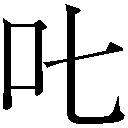
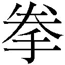

| 小学館電子全集 特別限定無料版 『三浦光世 電子選集 三浦綾子創作秘話』 (三浦綾子 電子全集) | |
| 三浦光世 | |
| 株式会社小学館 (2018) | |
小学館ｅＢｏｏｋｓ
三浦綾子 電子全集 特別限定版
三浦光世 電子選集──妻・三浦綾子と歩んだ40 年
三浦綾子創作秘話
三浦光世
目次
（『三浦綾子創作秘話』より抜粋）
十二「草のうた」──幼少時の自伝
十三「ちいろば先生物語」──榎本保郎牧師の壮烈な一生
十四「母」──多喜二とキリストの死
十五「銃口」──綾子最後の小説
あとがき
※本書に出てくる年月、役職等は、「三浦綾子小説選集」（主婦の友社二〇〇〇年十二月～二〇〇一年七月）出版当時のものです。
■作品概要
ある夏、北海道旭川市郊外の見本林で三歳の女児が殺される。父親、辻口病院院長の啓造は出張中、母親の夏枝は眼科医の村井の訪問を受けている最中の出来事だった。夏枝と村井の仲に疑いを抱いた啓造は、妻を苦しめたいがために、自殺した犯人の娘を引き取ることにする。事実を知らない夏枝はその娘に陽子と名付け、失った娘の代わりに可 愛 がる。夏枝や兄の徹らの愛情に包まれて明るく素直な娘に成長していく陽子。だが、陽子が辻口家に引き取られてから七年後、夏枝は夫の書きかけの手紙を読み、事実を知ってしまうのだった。
小説「氷点」は、綾子が、初めて公の場で書いた小説である。
今までに綾子自身、この「氷点」については少なからず、記事を発表している。が、私にしても思い出すことが多い。多少の重複を承知の上で、少しく詳しく述べておくことにする。
一九六三年一月一日、日が暮れてから、いや夕食後であったか、綾子の父母の家に年始の挨 拶 に行った。当時、父母の家はタクシーで十数分の距離にあった。その時、母が綾子に言った。
「あのね、秀夫がね、これを綾ちゃんに見せるように言って、出かけて行ったわよ」
見ると朝日新聞である。その社告を指し示されて綾子は手にとった。懸賞小説募集の社告である。
枚数 一千枚
賞金 一千万円
資格 プロ、アマを問わず
綾子は一読して笑った。
「わたしには無縁のことね」
その夜、帰宅していつものように床に就いた。そして翌朝、綾子は私に言った。昨夜一つの小説の粗筋ができたのだという。
「光世さん、書いてもいい？」
どんなことでも、私に許可を求める綾子の言葉だった。むろん賞金の額に目が昏 んだとは思わなかった。只 、愚図の私には珍しく、即答したのが不思議だった。
「いいだろう。神の御名が崇 められるようなものを書くといい」
彼女は直ちに全体の構成や、人物設定などを考え始めたようであった。一月九日にはもう執筆を開始している。綾子らしいスピーディーな事の運び方といえた。タイトルを「氷点」と決めたのが一月十二日である。このタイトルは私の提案であった。朝、出勤の途次、乗り換えのバスを待っていて、ふと頭に浮かんだタイトルであった。これを綾子はいい題だと大いに喜んでくれた。
舞台は、旭川市神楽 にある外国樹種見本林を想定した。この見本林は美 瑛 川 の畔 に創設された林で、かなりの広さがある。当時私は、旭川営林局に勤務していた。ある日、熊 谷 猛 哉 氏が私に言った。
「三浦君、見本林を見たか。いい林だよ。ぜひ一度見に行っておくといい」
熊谷氏は、一九四〇年、中 頓 別 営林署（当時営林区署）の毛 登 別 伐木事務所の主任であった時、私を検尺補助として採用してくださった。以来大変私を可愛がってくださり、面倒を見てくださった恩人である。
ともあれ、この見本林を一度見ておくようにとの一語は、まことにありがたいことであった。私はお言葉に従って、勤務の昼休みに行って見た。なるほど特有の趣のある林である。一度どころか、私は幾度もこの林に足を運ぶようになった。
そのころ、私は病 臥 中 の綾子（当時堀田姓）を時々見舞に行っていた。ある時、彼女に見本林に行ったことがあるかと、尋ねてみた。
「小学生の時と、女学校の時、遠足で行ったことがあります」
という。それを聞いて、ぜひもう一度あの林に立たせたいと思った私は、見本林に行く度に、再び彼女がここに立ち得るようにと、切に祈るようになった。
その見本林である。正に小説「氷点」にふさわしい舞台であった。もし熊谷氏の勧めがなく、見本林を知らなかったなら、どこに舞台を考えたことであろう。小説もかなり変わったものになり、あるいは「氷点」は到底成功しなかったかもしれない。
人生にとって、たった一 言 に大きく左右されることがある。弟秀夫の一言と共に、熊谷氏の一言も、実に大きな影響を私たちにもたらしたことになった。
こうして、綾子はひたすら書きつづけることになっていったが、当時綾子は私の姪 隆子を手伝わせて、雑貨店をひらいていた。日中は店に出て物を売り、夜、店の戸をおろしてから床に就く。その就床時の十時頃から、十一時十二時、時には午前一時までも原稿用紙に向かった。寝床に入って腹 這 いになって書き進めたわけである。一月、二月の厳寒のころは、夜インクも凍る。そのインクを万年筆で突き崩しながら書いたのであった。なにぶん、職場から五十万を借りて建てた家である。寒いことこの上もなかった。
小説の締切期限は一年であった。一九六三年十二月三十一日午前一時頃に脱稿したのであったろうか。それを私が一個の小包にしたのが午前二時、ひと眠りして本局に持っていったのは午前十一時前後であったと思う。十二月三十一日のスタンプがあれば有効ということで、私は局員に明 瞭 に押してほしいと注文をつけた。
「はい、わかりました。二回押しておきましょう」
と言ってくれた局員の言葉は、今も耳にある。遂 に矢は放たれたのである。
翌一九六四年、一月になって間もなく、私は急性肺炎になる。「氷点」の原稿のコピーを私が取っていて、その疲れが出たのかもしれない。複写機などは持っていなかった。一枚一枚私が書き写していたのだ。最後のほうはその時間もなく、ままよとばかりコピーを取らずに送り出したのであった。
肺炎は春になって治り、勤務に復することができた。綾子は小説を書いた疲れもなく、至って元気であったが、私の看病で疲れたのか、階段を二、三段踏み外して、尾 骶 骨 をしたたかに打ったことがあった。下手をすれば一生からだが不自由になるところを、幸いそこまではいかなかった。
こうして、第一次発表の六月十九日を迎えることになる。その二十五人の中に「氷点」の作品名と、三浦綾子の名があった。次いで六月三十日が第二次発表の日で、十二篇の中に再び「氷点」が登場する。
この第二次発表の一週間程前に、朝日新聞東京本社のデスク、門 馬 義 久 氏が綾子を訪ねて来られた。私は職場に行っていて、綾子だけが応対した。
「あの時は、実は首実検に行ったのでした」
のちに門馬氏は、そう言われた。どうやら、入選圏内の幾篇かが絞られつつあったのかもしれない。門馬氏は、「氷点」が確かに本人の作か、盗作ではないか、過去にいかなる文学的な体験があるのか。今後も文章を書く可能性があるのか。そんなことを、綾子との会話の中でそれとなく判断されたようである。
綾子は小学五年生のころ、大学ノート一冊にびっしり時代小説を書いたという。女学校時代、教師や生徒たちの大きな話題になる作文を書いたとも聞いている。小説は小学生時代から実に多く読んでいる。長じては短歌も学んだ。
が、そんな程度では取るに足らない。一つだけ、「主婦の友」誌に五十枚の手記を書き、これが入選していた。一九六三年一月号に発表されていて、これはいくらか判断の助けになったかとは思うが、そんなズブの素人がいきなり一千枚の小説に手をつけたのだ。何とも心もとないことではなかったろうか。
しかも「氷点」のテーマは「原罪」である。原罪とは人間が生まれながらに持っている罪を指す。キリスト教の専門用語である。となると文学には馴 じまない。文学作品の中に自分の思想信条を盛りこむことは、「主人持ちの文学」として、忌避される傾向がある。もし門馬氏がそれを持ち出せば、それだけで「氷点」は根本的に不可ということになる。
ところが何と、門馬氏は朝日新聞のデスクであると同時に、牧師でもあった。小さい教会ながら、鎌倉山教会において毎週その奉仕もされていたのだ。テーマの原罪に異議をさし挟むはずはなかった。
門馬先生（以来私たちは、氏を先生とお呼びしてきた。特に綾子は、信仰上でも小説の上でも多くの指導を受け、生涯尊敬していた）が、もし牧師でなかったらどうであったろう。評価も、社に帰っての報告も、全くちがったものになったこと、疑う余地がない。明らかに先生のおかげで、「氷点」は日の目を見ることになったと言える。
この第一回の会見を終えて帰られる時、門馬先生は、
「応募原稿は、すべて一日三枚半になっているのですが、もし全篇を一日三枚強に書き直して欲しいということになれば、三浦さんは直せますか」
と言われたという。これに対して、すべてに物 怖 じしない綾子は、
「はい、できます」
と即答したと、あとで綾子から聞いた。綾子のこと、いとも簡単に答えたにちがいない。
こうして遂に最終発表の一九六四年七月十日が来た。これが小説「氷点」一位入選の日であった。
このあと、新聞連載開始の十二月九日に向けて、綾子は書き直しに努力することになる。雑貨店は八月に閉店した。「小説を書きながら店もつづけられないか」、との声もあったが、「二兎 を追うもの」になってはと、小説一筋で行くことになったのだった。
十二月九日の連載が始まった時、綾子は何十回分を送っていたのだろうか。記憶にない。少なくとも三十回位は送っていたと思うのだが......
新聞小説の挿絵は福田豊 四 郎 画伯で、気骨のある方だった。
「もし節を曲げるようなことがあれば、わたしはあなたの挿絵を描かない」
と言われたこともあった。この世の力や富に妥協するなと戒 められたようで、私も身の引きしまる思いをしたことだった。
翌年一九六五年、二月か三月ごろ、私はふと思いついたことを、綾子に勧めた。「氷点」の中に、洞 爺 丸 台風の場面を挿入できないかと言ったのである。入賞した原稿には、その場面はなかった。一九五四年、函館港を出帆した青 函 連絡船洞爺丸は、台風のために座礁転覆、多数の死者を出した。洞爺丸にはアメリカ人宣教師が二人乗っていたが、二人共自分の救命胴衣を日本人に譲って、自らは死んでいったと聞いていた。
これを小説「氷点」の中に組みこめないかと、私は提案したのだ。綾子はこれも直ちにＯＫして、四月末から五月初めにかけての連休のころ、共に函館、青森に取材旅行をした。旭川から函館まで汽車で六時間余、その日は函館に一泊させればよかったものを、すぐにも夜の海を見せたくて、青森まで強行させた。綾子は幾度もデッキに出て、夜の海を凝視していた。これがきつかったのであろう、翌々日函館の宿で床に就き、医師の来診を乞 うことになった。その上、まだ完全によくならぬうちに、連休の休暇がなくなるからと、無理に起こして、旭川まで帰らせた。これも痛恨事の一つとして、いまもって申し訳なく思っている。綾子は終始一貫、私の無理な勧めにもよく従ってくれた。
「氷点」の賞金は前述のとおり一千万円であった。が、国税地方税合わせて四百五十万であった。講演などでこれを語ると、聴衆の皆さんがお笑いになる。なぜ笑われるのかわからないが、「なーんだ。一千万丸々もらわなかったのか」とでも思われるのであろう。それにしても差引五百五十万円、大金であった。私はこの時、人生最大の危機と受けとめ、いっさい私たちのためには使うなと綾子に宣言した。十三年間に及ぶ綾子の療養で、父にはかなりの借財があった。教会や信仰の友などの援助もあった。それらの返礼に用いよと私は言ったのである。
「わたしには背広はもちろん、ネクタイ一本もいらない」
偉そうにそんなことも言った。綾子は、せめてテレビの一台は欲しいと言ったが、これも許さなかった。ふつうなら、大いに抗議して然 るべきところを、綾子は決して文句を言わなかった。テレビを買ったのは十年後であった。
なぜそうまで、危機感を抱いたか。人間金があれば何でもできる、と思ったら大変、と自戒したのである。
「金を愛することはもろもろの悪の根である」
と聖書には書いてある。「金銭欲は諸悪の根源」と、私たち夫婦は言い換えて、お互いを戒め合ったものだった。それにしてもテレビくらい買ってもよかったのだが、それもしなかった。横暴な亭主であった。綾子の亡きあと、これも悔やまれてならない。
テレビといえば、「氷点」はテレビドラマにも映画にもなった。テレビドラマになると、二人で綾子の父母の家に、見せてもらいに行った。その頃は父母が隣りに住むようになっていたからである。
「氷点」は五回もテレビドラマになったと聞いた。その全部を覚えていないが、一つは天然色（カラー放送）だったと思う。いわゆる単発の番組もあったはずである。それぞれ特長があったが、何といっても最初にドラマ化された番組は人気があった。白黒で十三回の帯ドラマだった。芦田伸介、新 珠 三 千 代 、内藤洋子の俳優諸氏が名演技を見せた。驚異的な視聴率となり、その時間帯には、公衆浴場はガラ空きになったなどといわれた。
映画は山本薩 夫 監督により、見本林でのロケも行われた。真冬に綾子と二人で見に行ったことを覚えている。映画には船 越 英 二 、山本圭 、若 尾 文 子 、安田道代の諸氏が出演し、よくまとまっていた。若尾文子さんが、狭いわが家に寄ってくれたことも忘れられない。
小説「氷点」で書きおとしてはならない一つがあった。主人公の家のモデルである。どんな家にするかと、綾子は「氷点」を書き始めて思いついたのが、藤田旭 山 邸である。昭和初期に建てた家と聞いたが、和風と洋風のその建物はまことに立派な邸宅であった。この家を小説の主人公辻口啓造の家のモデルに使わせていただくことにして、許可を仰ぎ、幾度も取材させていただいた。大きなペチカも珍しかった。藤田旭山氏は俳句の先生で、戦後綾子もその句会で教えを受けている。
そんな関係で実現した次第であったが、この家も見本林同様、小説にぴったりだった。旭山夫人は俳号月 女 という、美しい女性であった。
「いつまでも、明るい話にならないのですね」
と、一度月女さんが綾子に言っていたが、「氷点」の筋は、最後には陽子の自殺未遂に終わり、ありがたくないことだったと思う。むろん、人物をモデルにしたわけではなく、ハウスをモデルにしたわけで、いたしかたもなかった。その旭山先生ご夫妻もとうに亡くなられ、今はご子息の尚 久 氏が住まわれている。
■作品概要
自分が殺人犯の娘であると知った陽子は睡眠薬自殺を図るが、一命を取り留める。意識が戻った陽子に、育ての親である啓造と夏枝は、陽子が殺人犯の娘ではなかったことを告げる。だが同時に、陽子は自分が不義によって生まれた子である事実を知るのだった。そんな陽子に特別な感情を抱く兄の徹は、陽子の実母に接近していく。北海道大学に進学した陽子は、徹の友人北原や札幌で知り合った順子らと、一見穏やかな日々を過ごすが、不義の子であるという自らの「罪」に悩み苦しむ。そんな陽子の前に、実の弟である達哉が現れる。
小説「氷点」は、前述のとおり、朝日新聞の懸賞小説に応募したもので、むろん続篇を書くことなど、作者の綾子も全く考えていなかった。第一入選するか、しないか、皆目見当もつかないわけである。幸い入選して、新聞に連載され、とにもかくにもテーマの原罪を、最後の陽子の遺書の中に盛りこんで終わった。したがって、著者として、書きたいことはなんとか書いたということになる。
が、「氷点」の連載が終わったあたりからであったろうか、周囲から、
「続も書いては......」
という声が上がった。
「あれはあれで、完結したのだから......」
と、綾子は答えていた。一千枚の長篇である。もし続篇を書くとすれば、それに見合っただけの枚数を新たに書かねばならないであろう。いかに楽天家の綾子も、それは考えられないはずであった。が、何とこれが現実の話として持ち出されたのである。
小説「氷点」を朝日新聞に連載したのは一九六四年十二月九日から一九六五年十一月十四日までであった。そのあと、第二弾として朝日新聞に連載したのが「積木の箱」である。これは、一九六七年四月二十四日から、約一年に及んだ。
「続氷点」の企画が持ちこまれたのは、多分この「積木の箱」が終わるころではなかったかと思う。しばらく休養したあと、手を着けて欲しいと、朝日新聞東京本社の学芸部から話があったと記憶している。
そこで綾子は、続篇の中に何を書くべきかを考えたはずである。おそらく続篇を書くことをためらわせる思いも、少なからずあったと思う。確かに「氷点」は大きな反響があり、テレビドラマにも映画にもなり、舞台での上演もあった。
が、一方、「氷点」に対する手きびしい批評もあった。ある文芸評論家は、
「こんな無理な設定による小説を読んだことがない」
と、酷評した。それに共感する向きも少なからずあったようである。いかに小説とはいえ、自分の子供を殺した犯人の、その子供を引き取るなどという発想は、あまりにも不自然で読むに耐えないというわけである。
そうした批評は、綾子も読んでいた。
「あのような批評を気にする必要は、全くありませんよ」
と、励ましてくださる編集者もいたが、当の作者である綾子は、いくらこだわらぬ性格とはいえ、そう平然としてもいられなかったにちがいない。
が、この広い世間、思いがけない事例があることを、綾子は知らされた。一人息子を殺されながら、その犯人をゆるし得た婦人のことを、ある時偶然伝えられたのである。「氷点」の設定が、必ずしも全く無理でなかったことを、その婦人の体験を伝え聞いて、彼女は大いに安心したのだった。
かいつまんで言えば、次のようなことであった。
婦人の名は津田彰 といった。彼女は、結婚して男の子を生んだが、その子が十カ月目の時にご主人を亡くされた。大正末期のころである。その後、経済的には恵まれていたとはいえ、女手一つで息子を育て上げる。
やがて息子は、関 西 学院大学を卒業、ある商社に入社する。が、時は戦中、兵隊にとられる。軍隊生活中に発病（多分結核と思われる）、療養生活を送ることになる。
幸い次第に回復、社会復帰に備えての外気小屋に入ることになる。病棟を出て、そこに移ったというわけである。そして間もなく全快する。しかし、明日は退所、帰宅することになったその日、事件は起きる。彼はいっかな帰宅しなかった。一九五一年七月一日、待てども待てども彼は帰らない。翌日療養所を訪ねると、「行方不明」と告げられる。彼のいた外気小屋にも行ってみる。室内は乱雑を極めている。ふだんきれい好きで、几 帳 面 な彼には考えられない状態といえた。
三カ月後、警察が来た。「息子さんは、療養所の裏山で、白骨死体で見つかった」とのこと。署に行ってみると、変わり果てた姿があった。確証はないものの、自殺であろうと警官はいう。が、キリスト者の彼が自殺するとは考えられない。
その後、幾度となく彼が夢に現れる。それがいつも同じ夢。指を二本立てて彼はいう。
「二人にやられた」
警察に他殺の線を調べてほしいと訴えるが、夢では......と取り合わない。
時はいつしか一九五四年の元日を迎える。その元日の朝、顔見知りの新聞記者が、事件の解決を告げに来る。犯人が自首したという。犯人は二人だったが、主犯は息子を殺して半年後に自殺、共犯者がこのほど自首したとのこと。犯人たちは何 れも、当時療養をしていて、津田さんの息子を殺したのだという。
共犯者は懲役十三年の刑を受けたが、死んだ息子が帰るわけではない。悲しみと憎しみはくすぶりつづけるばかり。津田さんはキリスト者、人をゆるさなければならないと思っても、息子を殺した犯人をそうたやすくゆるすことはできない。日曜日、教会では礼拝の中で『主の祈り』と言われるキリストの教えた祈りをとなえる。が、
「われらに罪を犯す者をわれらがゆるすごとく、われらの罪をもゆるしたまえ」
のくだりにくると声にならない。犯人たちへの憎しみが消えないことに、津田さんは悩んだ。キリスト者として確信が揺らいだという。
と、ある秋のひと日、一人の婦人が、家の前を行きつ戻りつしている。共犯者の母親が詫 びに来たのだった。津田さんは彼女を家の中に入れ、四時間も語り合った。
「わたしがあのような子を生んだばかりに......」
母親は、幾度もそう言って帰って行く。そのせつなさが痛いほどにわかった。
と言って、犯人を心からゆるすことはできない。それを息子は天国で悲しんでいると思い、ある夜犯人に手紙を書くべくペンを持つ。午前三時までかかって書いた手紙に、
「わたしはあなたをゆるします」
との一行があった。
その手紙に感動した犯人が返事を書いてきた。更生を誓い、信仰によって救われたいという。その後、津田さんは彼を刑務所に訪ねて行く。彼は刑期が十三年から八年三カ月に短縮され出獄する。刑務所から故郷への途次、先 ず津田さん宅に寄る。
しばらくして、彼は洗礼を受ける。その式に立ち会った津田さんは、更に深い喜びに満たされる。
以上が津田さんの辿 った道であった。これが手記として一九六六年五月号の「マドモアゼル」という小学館発行の女性向けの月刊誌に掲載された。その手記の始めの方に、綾子の感想も同時掲載された。おそらく編集者の求めによったのであろう。少しく綾子の一文を抄出する。
〈事実は小説よりも感動的である
三浦綾子
『氷点』の連載中、そして単行本になってからも、いろいろおたよりをちょうだいした。その中で、
「自分の子を殺した犯人の子をひきとるなんて、そんなことが現実にあるだろうか。絶対にあり得ないと思う。これはやっぱり小説だけの世界ではないだろうか」
という意味のおたよりは、かなりたくさんあった。（中略）
だが、私の心の隅で、
「いや、この広い世の中に、一人ぐらいはそんな人間がいるのではないか」
という思いもないわけではなかった。
しかし、去年の秋、京都の講演に出た際、私はおどろくべき話をきいた。それは本誌に紹介されている記事をお読みいただければおわかりのことと思う。（中略）
私の知っている言葉では津田さんを讃えるにふさわしい言葉がないだろう。いかに真実な信仰が、人を真実な愛の人になし得るかということを知って、私は心から神をほめたたえずにはいられない。
「事実は小説より奇なり」という言葉があるが、実に、
「事実は小説よりも感動的である」
と私は思わずにはいられないのである〉
こんなこともあって、綾子は続篇の「ゆるし」のテーマを深めていったのかもしれない。
ところで「続氷点」の連載が始まったのは、一九七〇年五月である。この年は一月に綾子が札幌の天使病院に精密検査のために、十日余り入院した年であった。癌 がどこかにひそんでいないかと懸念しての入院であったが、幸いその心配はなく、仕事をつづけることになった。
第一回の送稿がいつであったかと思って、日記を調べてみたら、三月十八日東京から来られた担当の門馬義久氏に、あらすじと共に二回分手渡したことが記されている。二回分とはまた僅 かだったと思うが、先ずは序盤、ゆるゆると始めたらしい。
「続氷点」の取材で忘れられないのは、網走に流氷を見に行ったことである。前篇の時と同じく、続篇でもラストシーンを綾子はいち早く想定していた。三月末であったか、網走市の観光課に電話で問い合わせたところ、接岸していた流氷はすべて沖に去ってしまったが、あるいはもう一度戻ってくるかも知れないということであった。
幾度か電話をかけたが、なかなか沖から戻って来ない。もっと早く見に行くべきであったかと後悔したが、四月四日朝九時網走市に電話をかけると、
「流氷がまた戻りました」
とのこと。それっとばかりに私たちは荷物を携え、旭川駅十時発の汽車に乗り込んだ。出発前、六条教会に電話をかけた。明日は日曜日、礼拝欠席の旨、川谷威 郎 牧師に連絡したのである。川谷牧師は、
「流氷が戻って来た？ そりゃあよかった。『続氷点』も大成功するで」
と、喜んでくださった。
網走まで汽車で四時間余、二時過ぎに着いた。早速海岸にタクシーで馳 けつけて、瞠 目 した。くもった空の下に、流氷は幾重にも海岸から沖の方へと連なっていた。
ホテルへ着いたあとも、私は窓にしがみつくようにして、流氷を眺めつづけていた。そして、想像を絶する現象を見たのであった。綾子はその時の情景を、ラストシーンに見事に描き出した。文章は私たちが現実に宿の窓から見たように、小説の主人公の陽子がホテルの一室から外を眺めている形になっている。以下これも抄出してみよう。
〈流氷の上の空が、ひとところばら色にあかねしている。陽子はじっと目を向けていた。ゴメが二、三羽、氷原に触れんばかりに低く飛んで行く〉
〈雲のひとところをばら色にそめていた淡いあかねもいつしか消えた。
と、光が一筋、流氷の原に投げかけられた。サモンピンクの細い帯が、氷原を染めた。夕光は、宿の裏山のほうからさしているようだった。
ゴメの数がふえてきた。猫に似た鳴声を立てながら、宿の右手双子岩のあたりに群れている。サモンピンクの光は間もなく消えた。再び蒼ざめた流氷が、目の前にあった。流氷の色が、次第に灰色に変わって行く。
この灰色一色の氷原が、人生の真の姿かも知れない。そう思って、陽子は椅 子 から立ち上がろうとした。すると再び、すうっとサモンピンクの光が、流氷の原を一筋淡く染めた。
次の瞬間だった。突如、ぼとりと血を滴らせたような真紅に流氷が滲 んだ。あるいは、氷原の底から、真紅の血が滲み出たといってよかった。それは、あまりにも思いがけない情景だった。
誰が、流氷が真紅に染まると想像し得たであろう〉
〈やがて、その紅の色は、ぼとり、ぼとりとサモンピンクに染められた氷原の上に、右から左へと同じ間隔を置いてふえて行く。と、その血にも似た紅が、火 焰 のようにめらめらと燃えはじめた。
（流氷が！ 流氷が燃える！）
人間の意表をつく自然の姿に、陽子は目を見はらずにはいられなかった。墓原のように蒼ざめた氷原が、野火のように燃え立とうとは〉
以上の描写は、綾子と私が宿の窓から、二時間も流氷を眺めつづけているうちに起きた現象であった。この文章が新聞に掲載されたのは、およそ一年後であるが、綾子もその強烈な印象は、瞼 に焼きついて離れなかったのであろう。むろんノートには記録していたわけであるが、綾子のノートはいつも不明瞭であった。私はよく、
「綾子の小説は、混 沌 の中から生まれるものなんだね」
と笑ったりしたが、いざ活字になると、実に的確だった。右の文章の中で、強いて言えば、血の滴りのような現象は次々に生じて、次第にそれらが左に移行し、右端がうすれて行くのだったから、その辺りがやや描写不足とも言えた。
ともあれ現地には「燃える流氷」という言葉もあると聞いたが、不思議な現象にはちがいない。おそらくうす陽が流氷に射 して、プリズムのような現象を呈したのかも知れない。それにしても流氷は不定形である。にもかかわらず、等間隔に真紅の部分が生ずるのがわからない。何れにせよ、千載一遇ともいうべき情景を見せられたことは、ありがたいことであった。
ところで「氷点」の前篇では、前述のとおり、無理な設定という批判を受けた。が、続篇ではそれがなかった。登場人物の動きは、今読んでみても、実に自然な展開によって運ばれている。
しかし、ラストの流氷が血の滴りのようになったり、 焰 のようにゆらめく情景を、全く架空のこと、単なる想像の所産と断定した女性がいた。何に書いていたかは忘れたが、極めて独断的な批評であった。確かに容易に信じ難い事象ではあったが、私たち二人でまちがいなく目撃した事実である。大体綾子は、自然現象を自分の想像によって、無理に変えて書いたことはない。これだけは彼女の名誉のためにも、あえて力説しておきたい。
■作品概要
牧師の家に育った奈緒実は高校卒業後、友人京子の兄、良一から求婚される。やんちゃな面を持つ良一に奈緒実は惹かれていくが、良一の人間性に不安を感じとった両親は反対する。一方、奈緒実の高校時代の担任で良一の女性遍歴を知る竹山もまた、奈緒実への密かな思いを抱くだけに祝福することができなかった。周囲の声に反発する奈緒実は函館に帰る良一を送りに行き、そのまま結婚生活を始めてしまう。だがそのわずか数カ月後には、良一の冷酷な面を知ることになるのだった。
札幌市豊平区羊ケ丘一番地に「羊ケ丘展望台」がある。「羊ケ丘」の名称は、一九四四年、当時の農林省月 寒 種羊場だったこの地を、豊平町議会の決定によって、「羊ケ丘」と呼んだのが始まりと伝えられる。
展望台は一九五九年につくられ、多くの観光客が訪れるようになったとか。ここには、
「少年よ、大志を抱け」
という、有名な言葉を学生たちに残して、アメリカに帰って行ったクラーク博士の像も建てられている。
「月寒種羊場」と言われた頃には、いったいどのくらいの羊が放牧されていたのだろう。多分何百頭もの羊がいたのであろう。現在は五十頭ほどの羊が、観光用に飼われていると聞く。
小説「ひつじが丘」というタイトルはこの「羊ケ丘」から取ったのだが、なぜ「ひつじが丘」と、あえて平仮名にしたのか、妻綾子が世を去った今は、確かめる術 もない。
この小説は、一九六五年八月号から、一九六六年十二月号に亘 って、「主婦の友」誌に連載された。綾子にとって初めての月刊小説である。一九六四年七月十日、「氷点」が入選し、同年十二月九日から一九六五年十一月十四日まで、「氷点」は朝日新聞に連載された。その「氷点」に注目してくださっていたのか、その連載中に主婦の友編集部の藤田敬治氏が来旭、
「主婦の友誌に月刊小説を書いて欲しいのですが」
ということだった。藤田氏には、一九六二年の同誌に愛の記録「太陽は再び没せず」入選の時に、おせわになっている。綾子はまだ「氷点」連載中ということもあって、即答しかねたのではなかったかと思うのだが、「氷点」の連載中の一九六五年の八月から早くもこの小説を同誌に連載し始めている。意外に早い着手である。
月刊小説は、日刊連載のそれとは、自 らリズムがちがう。そんなことをちらりと綾子が言っていたようであるが、すぐに調子をつかんだらしかった。
この登場人物にも「氷点」同様、ほとんどモデルはいない。その点「泥流地帯」とはかなり趣を異にする。したがって、事件のあった場所に再々取材に出かけることはなかった。舞台を札幌に取り、小樽や函館も時々出てくることもあって、二、三度小樽と函館へ行った。羊ケ丘へも行ったが、ここもせいぜい三度と行かなかったように思う。
しかし、主人公の奈緒実という若い女性を牧師の娘として描き、「愛」という問題をよく掘り下げて書いたと言える。すなわち「愛」と「好き」とは根本的に異なることを、綾子は小説の中でかなり追究している。こんな会話を交わす場面がある。
〈「奈緒実。人を愛するって、どんなことか知っているかね」
改めて問われれば、奈緒実は明確に答えることはできなかった。
「お前も愛するということが、単に好きということではないくらいは知っているだろう」
「......」
「愛するとはね、相手を生かすことですよ」
愛子が助け舟を出した。
「そうだよ。お前は果たして、杉原君を生かすことができるかね。おとうさんがにらんだところでは、あの人間を生かすということは、ひどく骨の折れることだと思うね。とても奈緒実には生かしきれまいな。へたをするところしてしまうことになる」
「まあ、ひどいわ、おとうさん。わたしだって、一人ぐらい愛することができるわ」
「そうかね。愛するとは、ゆるすことでもあるんだよ。一度や二度ゆるすことではないよ。ゆるしつづけることだ。杉原君をお前はゆるしきれるかね」
耕介は注意深く奈緒実を見守った。
「あの人、そんなにゆるされなければならないところがあるとは思えないわ」
奈緒実が憤然とした〉
このようなやりとりが交わされるほど、杉原良一という人間には問題があった。特に女性関係が放縦だった。この男性にずるずると引きずられて、主人公の奈緒実は悲劇を招く。そのプロセスを綾子はこれまた巧みに展開して、愛の何たるかを深く掘り下げて行く。
「三浦綾子はストーリー・テラーだ」
と、言われ始めたのは、いつからであったろう。この「ひつじが丘」を読んで、改めてなるほどと思わせられる。いい意味にせよ悪い意味にせよ、筋の展開は巧みだと言えそうだ。
「塩狩峠」を「信徒の友」誌に書き出したのが一九六六年四月号で、何カ月後かに綾子は口述筆記で作品を生み出すことになった。とすると、この「ひつじが丘」の後半の何回分かは、これも口述したことになる。今、ざっと「ひつじが丘」を読み返してみて、どこまでが自分で直接書いたか、どこから口述をしたか、全くわからない。それは「塩狩峠」についても言えるのだが、直接書いても口述しても文章にはほとんど変わりはなかったようである。
なお、連載があと三回位の頃であったろうか、
「ぼつぼつ、終盤の構想を練って、書き進めて下さい」
と、編集者の藤田氏が言われたのをわたしは傍で聞いた。あれはどういう意味であったのだろう。
この小説への評価もかなりよかった。特に札幌の西村真吉氏は、
「文学的には『氷点』以上です」
とほめて下さった。西村氏は綾子が闘病中たいそうおせわになった西村久蔵氏の弟さんで、文学をよく研究されていたと聞いた。
■作品概要
旭川の私立中学に赴任した教師の杉浦悠二は、生徒のひとり、佐々林一郎の暗い表情が気になっていた。実は一郎は実業家の父を持つ裕福な家の子であったが、姉だと信じていた奈美恵が父豪一の妾だったことを知って以来、荒 んでいたのだった。悠二は一郎の力になりたいと何かと尽力するが、一郎は全く心を開かない。唯一、雑貨店を営む久代とその幼い息子和夫にだけは素直になれたが、その久代もまた豪一の被害者であり、和夫が自分の弟であることを知った一郎は絶望する。そして、悠二の当直の日、学校に放火することを決意し......。
前述のとおり、小説「氷点」は一九六四年十二月九日から翌年一九六五年十一月十四日まで、朝日新聞に連載された。「積木の箱」は、綾子第二回目の新聞小説で、一九六七年四月二十四日から一九六八年五月十八日まで、朝日新聞に連載された小説である。千枚を越える長篇であった。「氷点」の連載が終わって、約半年後に手がけたことになる。いったい、いつ、どんな取材をしたのだろう。記憶もうすれて思い出せない。
タイトルについては、忘れようにも忘れられないことがあった。私はこの小説の大筋を綾子から聞いた時、
「『擁 壁 』というタイトルはどうか」
と言った。綾子は異議を挟まず、それに決めた。が、この案は、朝日新聞社のデスクたちの反対するところとなった。
「井上靖氏の作品に『氷壁』があった。その氷をとって『氷点』としたわけでもないだろうが、『擁壁』とすると、『氷壁』の上と下の両方をとることになる。それはまずいですな」
ということであった。至極もっともなご意見である。私は早速自分の案を撤回した。そして綾子がいろいろ考えて「積木の箱」に落ちついたのだが、私としては「箱」が少しく気になった。しかし教育という制度を、一つの容器にたとえたものと、納得した。朝日新聞社からこれに対する異議もなかったことにもよる。
舞台は旭川市の西方に位置する春 光 台 という長い丘。ここは徳 富 蘆 花 作の「寄生 木 」という小説の舞台でもあり、記念碑もある。
舞台はともかくとして、この小説の連載が始まって間もなく、読者からの手紙が来た。抗議の手紙である。
「どこの世界に自分の娘に、好きこのんで『乱子』などという名前をつける親がいるだろうか。もう私はあなたの小説を読まない」
という手きびしい手紙だった。さすがに綾子も、これには少なからず参った感じだった。以前に綾子は、そんな名を実際に見ていたようだったが、返事も出せずに時は経 っていった。
ところが、この小説が単行本になって何年経った頃であったろうか。思いがけず乱子という実名の人を知ったのである。テルミー（温灸治療）その他で何かと世話になっていた村田保、雪江ご夫妻の末の息子さんに史朗という人がおられた。この夫人が乱子という名であった。綾子は大いに喜んで一篇のエッセイを書いた。
小説の少し先を読めば、何も抗議してくるまでもなかったのだが、読者はたった一語で、頭に来たのでもあったろうか。小説の一部をあえて引用してみよう。転任して来た杉浦悠二という教師が、小説の始めに登場する。その教師は、新しい受持の生徒たちに、先ず自己紹介をする。
〈「ぼくの名前は杉浦悠二といいます」
悠二は黒板に自分の名を大きく書いた。
「悠二の悠は、悠々の悠だが、先生がきょう遅刻をしたのは、別段悠々と寝坊したわけではないので、どうか許してほしい」
そう言って頭を下げると、生徒たちは笑い声と共に気持のよい拍手をもって迎えてくれた。
「ありがとう。名前というものは、ふしぎなことに、その人の名に不をつけると、よく合うものだそうだ。先生も悠々たる人間にはなりたいが、はなはだ気の小さいところもあるので、よろしく頼む」
生徒たちは声をあげて笑った。
「正という人間は、上に不をつけると不正になる。良子という人は、上に不をつけると不良子となる。この不をつけた方が似合う人間にはならない方がいいと思うね。ためしに君たちの名前に不をつけてみてほしい。どうだろう」
すると、一番前の細い女の子の手が上がった。
「先生、私の名は、不をつけたほうがいいんです」
「君は何というの」
「小林乱子、乱は乱れるという字です」
「なるほど、一心不乱の不乱か」
悠二は気の毒な名前だと思った。小林乱子は蘭を乱と祖父が誤って届けたのだと言い添えた〉
右の文は、文庫本から引用した。終わりのほうに、乱子は蘭子を祖父が誤って届けたとあって、そう目くじらを立てるほどのことはない。
が、（待てよ）とここで私は思い返した。新聞連載の時には、誤って届けたということは、書かれていなかったのではないかと、心配になったのだ。そこで私は、三浦綾子記念文学館の小泉雅代学芸員に電話をした。
「『積木の箱』の新聞連載の切抜きはありませんか」
と問うたのである。調べた結果、それはあった。問題の箇所を読んでもらうと、
〈「なるほど、一心不乱というのはいいな」〉
となってその日の文は終わっているとのこと。やはり日刊連載の時には、蘭子を誤って届けたということにはなっていなかった。前述の読者の抗議も無理がないといえる。綾子は、何とかしなければならないと思ったのであろう。先ず単行本の段階で、蘭子云々の文章を加え、文庫本にもそれが踏襲されたことになる。件 の読者は果たして、単行本や文庫本を読んだか、どうか。
「これからはもう、あなたの小説は読まない」
と言った以上、読んでいないかも知れない。ねがわくは、単行本のその箇所と、乱子なる実名の女性がいたというエッセイに、目を注 めてくれたらと思うのだが......。
小説の後半に入って、「砂湯」という章がある。比較的長い章になっている。小説の主人公でもある杉浦悠二たち教師が、四十人の生徒と、十人ほどの父兄をスクールバスに便乗させ、旭川から層 雲 峡 、美 幌 峠 、更に阿 寒 の砂 湯 に旅行する場面が描かれている。右のコースは、綾子と二人で以前に行ったこともあったが、挿絵を描いて下さる小磯良平画伯とそのご夫人、編集担当の門馬義久氏を案内したのはいつであったかと、一九六七年の日記をめくってみたところ、メモ程度に記録してあった。以下関係箇所のみ抄出してみる。
〈五月二十九日 月
小磯良平先生御夫妻、門馬先生来旭。無事夕方五時到着。料亭末野にて、朝日新聞旭川支局長を交え会食。
五月三十日 火 晴
午前、綾子、小磯先生を案内、市内に。二時、バスにて旭川発、層雲峡へ。小磯先生暑がってバスの窓を開ける。
層雲峡観光ホテル泊。
五月三十一日 水 晴
層雲峡を十時十五分、ハイヤー二台にて出発。上 川 駅から美幌駅まで汽車。
美幌からまたハイヤー二台に分乗。昨年松田亘 弘 氏と兄と四人で来た時、美幌峠は霧で見えなかったが、今日は見事に晴れてすばらしい展望。
屈 斜 路 湖畔を走り砂湯へ。五時川湯御 園 ホテルへ。
六月一日 木 日本晴
雲ひとつない空。午前、鏡のような屈斜路湖を砂湯の浜に見た後、弟 子 屈 経由、摩 周 湖へ。実に美し。
午后御園ホテルへ帰り、自由時間。吾 、少しく腹痛。綾子に温 灸 をかけてもらう。
六月二日 金 晴、くもり
御園ホテルから川 湯 駅までハイヤー、四キロ。川湯駅から網走駅まで鈍行。初めて通る路線。かつて綾子が自殺を図った斜 里 の海べを車窓に見る。
網走で一時間市内見物。網走監獄、漁港など。
網走駅から旭川へと急行に。車中、昼の弁当を食べて、吾かなり回復。
小磯先生、車中にて画帖に折々スケッチ。先生に近づくと、すぐに画帖を手で覆われる。
綾子、空席の指定席二つに、よく眠る。先生ご夫妻は、椅子も傾斜させず、常時背筋を伸ばして正姿勢。吾らとは全く対照的。
五時近く、旭川駅着。
六月三日 土 曇のち雨
午後、綾子口述。夕方、小磯先生の御招待を受け「みよしの」にて夕食。八時まで。夕食後、近くの松田亘弘氏宅の二階へ二人で寄る。二階から飲屋界 隈 を眺める。これも取材なり。
六月四日 日 曇少しく雨
九時十分、小磯先生ご夫妻と門馬先生を駅頭に見送る。駅から六条教会へ徒歩。説教感銘深し。
「好ましい存在が、しばしば吾ら人間を滅亡にさえ追いやる。神を離れての文化は、もはや文化たり得ない」等々〉
以上、日記を拾って見た。網走から旭川への汽車は、多分四時間は要したはずであるが、書いていない。小磯先生ご夫妻の姿勢のよさには、よほど感心したらしく書き記している。先生は謹厳なキリスト者。多分ご夫人も信者であったと思う。この小磯先生の目に、私たち夫婦は何とも行儀が悪く見えたのであろう。
「あの二人、何とかなりませんかなあ」
と、門馬先生に慨嘆されていたと聞いた。このことは、何かに書いたが、二人が人前も憚 らず、絶えずお互いの体に手を当てていたのが、目障りであったらしい。申し訳のないことをした。先生には、仲のよさを通り越して、ベタベタしているように見えたにちがいない。ひとこと断ってから、手当をすべきであったが、癖になっていた。いや当然の習慣になっていた。
私たち二人が結婚して幾日も経たない頃、旭川六条教会の信者で、八十代半ばの青木楽峰という方がわが家に来訪された。そして、綾子ののどが弱いことを言われた。同時に、手を当てると、体の至る所、少々の痛みや違和感、疲れなどが治ることを説かれた。マッサージをしないでも、当てているだけでよいものであるとのことであった。むろん、人間のなすこと、オールマイティではないが、医師が往診に来るまでの間でも、患者の痛いところに手を当てているとよい、とも勧めてくださった。
この手当を私たち夫婦は忠実に実行し、遂には人様の前でも全く遠慮することなく、体に触れるということになった。確かにこれで楽になったことは限りなくある。今でも、私は夜寝ていてのどが痛かったりすると、自分の手を当てる。だいたい、十分か二十分でよくなる。
しかし、小磯先生ならずとも、見苦しいと見た向きは多かったことであろう。六条教会の若い信者の中にも、
「いくら仲がよくても、礼拝中にあんなに仲のよいところを見せなくても、いいじゃないの」
と言った女性がいたと、伝え聞いた。
私たちが、小磯先生の言葉を門馬先生から伝えられたのは、いつであったのだろう。次に門馬先生に会った時か、いやかなり後であったかも知れない。そうでなければ、直ちに非礼を詫びたはずであるが、その記憶がない。
この小磯良平画伯については、なお二、三書いておくことがある。挿絵を描いてくださっているということは、いうまでもなくその小説を読んでいるということである。それなりに登場人物に寄せる思いも、当然生じてくるのであろう。「細川ガラシャ夫人」の挿絵を描かれた中村貞 以 画伯は、織田信長が小説の中で、いつまでたってもいい人物にならないことに不服を感じられた。小磯画伯は「積木の箱」の二人の女性久代と敬子のうち、敬子が好きで、主人公の杉浦悠二とこの敬子が結婚するように、願っていたことを、小説が単行本になった時に言われた。小説は、久代と結ばれることが想定された結末になっている。小磯先生はそれが残念であったらしい。単行本の表紙の女性は敬子であると、明言された。
単行本が発行されたのは一九六八年五月で、新聞連載終了後、ほとんど間を置かずに刊行された。朝日新聞社の出版担当者は、連載中に出版の準備を整えていたのであろう。
私たち夫婦が、小磯画伯のお宅に案内されたのは、この年の十一月であった。大阪、神戸、明石 への講演の途次、神戸の画伯宅へ伺ったのである。
本稿を書いている二〇〇一年五月二日、たまたま明石から内 貴 八郎右衛門牧師が来訪した。今、「積木の箱」について創作秘話を書いていることを告げると、内貴牧師は言われた。
「そうですか。『積木の箱』が出版された年ですね。あの時、講演に明石にお出 で下さいましたね。神戸の小磯先生のお宅にご案内したのは、私でした。玄関に奥さまが迎えに出られ、アトリエも見せてもらいました」
全く忘れていたが、内貴牧師に案内してもらったことを、改めて思い出した。小磯邸を訪ねる前に、綾子は書店に立ち寄り、「積木の箱」を一冊買い、サインをして小磯画伯に贈るべく持参したとも、内貴牧師は言われた。
内貴牧師は一回目の綾子の講演をたいそう気に入られ、その後二回、計三回もお招き下さった。一九九七年、綾子が札幌の柏葉病院に入院中には、
「東京に用事があった序 でに、ちょっと足を伸ばして参りました」
と言われた。東京からわざわざ札幌まで足を伸ばしたのである。大いに恐縮したものだが、先生は正に三浦綾子ファンで、一九九九年十月十二日、綾子の告別式にも、明石から駆けつけて下さった。単にファンというより、やはり愛が深いのであろう。姓も名も珍しいが、「八郎右衛門」は多分襲名のはずである。とにかくたくさんおせわになった。
「積木の箱」は朝日新聞社と新潮社から文庫本としても出版された。朝日新聞社からは、一九七八年七月に第一刷が出た。その後、新潮社から一九八四年十月に文庫版が出て、以来多く版を重ねてきた。二〇〇〇年六月現在で上巻が三十五刷三十二万六千部、下巻が三十四刷三十万七千部に及んでいる。上下に差がついているのもおもしろいが、この小説は上巻だけ読んでも、かなり満足させるということでもあろう。おそらく、下巻は読むに及ばないということではなさそうである。この度、文庫本を上下通読してみて、そんな印象を受けた。
綾子はつとに、ストーリー・テラーと言われてきたが、よい意味にせよ悪い意味にせよ、よくぞここまで、読者を引きつける筋の展開をしたものと思うのは、私のひいき目であろうか。
小説が文庫版として刊行される時、多くの場合巻末に解説が付加される。この「積木の箱」も解説が付された。朝日新聞社刊の文庫版には高野斗 志 美 氏が、新潮社版には水谷昭夫氏が解説を書いている。高野氏は元旭川大学の教授であり、水谷氏は元関 西 学院大学の教授であり、何れも文芸評論家として名を成している。高野氏は現在「三浦綾子記念文学館」の館長である。水谷氏は先年惜しくも逝去された。
この二人の解説を今回二回ずつ読み直してみた。その論評を論ずる力は、私などには全くないが、評論家とは何と深く対象を掘り下げ、人間を追求して止まないものかを、只々驚嘆するばかりである。
「積木の箱」は、本章の冒頭に書いたとおり、朝日新聞に連載された。担当者は「氷点」の時と同じく門馬義久氏であった。終わってから氏は綾子に言われた。
「立派な新聞小説です」
私たちはその言葉に、いたく感謝した。
■作品概要
東京で、父と厳格な祖母に育てられた信夫は、祖母の死後、キリスト教徒であったために家を出されていた母親とも一緒に暮らすようになる。母と妹、そして父までもが信じるキリスト教に違和感を抱きながらも、真 っ直 ぐに成長していく信夫。やがて、少年時代からの友人吉川に誘われ北海道に渡り、鉄道会社で働くようになる。この地で信仰に目覚めた信夫は自らも洗礼を受け、吉川の妹ふじ子との結婚を決意する。結納のために汽車で札幌に向かうが、塩狩峠の頂上にさしかかったとき、信夫の乗った客車が突然汽車から離れ、暴走を始めた......。
小説「塩狩峠」は、綾子にとって初めての月刊連載小説であった。「氷点」が一九六四年十二月九日から、一九六五年十一月十四日まで、朝日新聞に毎日連載されたことは、「続氷点」の章で書いたとおりである。したがって、「塩狩峠」の連載を求められたのは、多分「氷点」の日刊連載が終わる頃であったと思われる。
日本キリスト教団出版部から、文芸評論家であり、「信徒の友」誌の編集長（のちに牧師）佐 古 純 一 郎 氏が来宅され、同誌に月刊小説を書いて欲しいと言われて、妻綾子はお引き受けし、一九六六年四月から連載を始めたのが、この「塩狩峠」である。連載は二年半に及んだ。
内容は、私たちの属する旭川六条教会の大先輩、長野政雄氏をモデルにしているが、小説の主人公の名は永野信夫となっている。これは長野政雄氏に関する資料がほとんど残っていなかったため、おおよそ綾子の創作となっている。実在の長野政雄氏は、綾子があとがきでも書いているとおり、作中の永野信夫より、はるかに優れた人物であった。
この人物を書くきっかけについては、綾子のエッセイ集「遺された言葉」（二〇〇〇年刊）の中に、「愛と謙 遜 」という表題で載っているが、ここに少しく引用し、私の記憶も交えて書いておきたい。
〈藤原栄吉氏、年はその時八十一歳であったか、八十二歳であったかは忘れた。
私が初めて会ったこの藤原栄吉氏は、私に長野政雄という人物を知らせてくれた忘れ得ぬ人である。
長野政雄──その名を知る人はいまや少ない。この名は私の小説『塩狩峠』の主人公永野信夫のモデルである。長野政雄氏は旭川から約三十キロ北にある塩狩峠で、暴走し始めた客車を、線路に身を投じて止め、自らは命を捨て、乗客を助けた人である。
私は藤原氏が長野政雄氏の直属の部下であったことなど全く知らずに初対面をしたのは、ある年の六月、旭川六条教会の研修会のあった日のことだった。研修会では最初に自由懇談があった。皆、心の中を自由に話し、さまざまな意見を出した。それぞれ活発な意見だった。私には愉快な会だと思った。
やがて司会者によってプログラムは進行した。その時、見知らぬ老人がどしどしと意見を吐かれた。おもしろい人だと思ったが、少し発言時間を一人で長く取り過ぎるように思われた。
研修会後の二週目の日曜日の礼拝後、牧師が私に分厚い封書を手渡した。藤原栄吉氏から牧師宛 の手紙である。読んでみて私は驚いた。一言で言えば、
「この間の研修会はまことに不愉快でした。あの婦人は、いったい何者ですか。わたしの述べる意見にいちいち批判を加え、もしくは反対意見を述べました。もはやあの婦人と同席することはご免蒙 りたいと思います」
というような内容であった。
私は動転した（以下略）〉
教会では時々、信徒研修会を持つ。一日とか半日とか、その時によって時間は異なる。二日か三日、共に旅行先で催されることもある。この時は、確か日曜日の午後、市内の常盤 公園でなされたと覚えている。常盤公園は広い池や、築 山 、石狩川の土手、その他木立ちも芝生も美しく、全国的にもかなり魅力ある公園の一つと、常々私は思っている。
この公園で、六月のあたたかい日射しのもと、いくつかの分団に分かれて、自分たちの信仰や聖書について語り合ったはずである。私と綾子は別の分団であった。終わった時、彼女は言った。
「よかったけど、自分だけ長々と発言する人がいて......」
と言った。それが藤原氏であったが、よもや、もう同席ご免とまで言われるとは、夢にも思わなかったのであろう。率直な綾子のこと、遠慮せずに感想も述べたと思われる。それが藤原氏の怒りを招いたわけである。ここでふつうなら、
「なに言ってんのよ。あんな程度で同席ご免なんて、冗談じゃないわよ。こちらこそご免蒙りたいわ」
ということになるかもしれない。が、綾子にはそうした発想はない。直ちに牧師に同行してもらって、藤原さん宅にすっとんで行った。すぐには部屋にも上げてもらえなかったそうだが、幾度も平謝りに謝った結果、藤原さんはようやく心を和めてくれたという。
そして、藤原さんの机の上の原稿に目を注 めた綾子が、長野政雄氏のことについて、詳しく知らされることになり、小説に書かせて欲しいという話にまで至ったという。
もし、綾子が詫びに行かなかったとしたら、永久に「塩狩峠」は書かなかったであろう。この後、藤原さんはことのほか綾子を可愛がってくださり、教会の帰途、よく食事の店に一緒に入ったりした。六条教会にはこの藤原さんと、もう一人渋谷鉄雄という高齢者がおられた。渋谷さんは数え百歳で召され、藤原さんは九十何歳かで天に召された。お二人共実にお元気で、食欲も旺 盛 だった。姿勢もよかった。
ある時私は藤原さんに尋ねた。
「長野政雄さんは、どんなお顔の方でしたか」
これに対して藤原さんは、私の顔を見、
「あなたのような顔でした」
と言われた。六条教会に一枚残っている長野政雄氏の写真とは、全く似ていない私だが、あるいはどこか似た感じもあったのであろうか。
渋谷さんの言葉で、忘れ得ない言葉がある。
「三浦さん、飴 玉 は体にいいですよ。唾 液 が出るので、いいんですよ」
以来、かれこれ二十年、私は毎食後バターボール一つを、欠かさず舐 めることにしている。
綾子が口述筆記を始めたのがいつ頃であったか、正確には覚えてはいないが、「塩狩峠」連載中であったことは確かである。取材で一緒に小樽へ行った時なので、私が職場の営林局を辞めたあとだったと思う。おそらく一九六七年の夏ごろかも知れない。
「わたし、きょうは肩こりがひどいので、わたしのいうとおりに、原稿を書いてみてくれないかしら」
小樽のホテルで、何回目かの「塩狩峠」を書こうとした時、綾子が言った。私は二つ返事で万年筆を握り、原稿用紙に向かった。所定の枚数を書き上げると、
「すごく楽だわ。これから、この方式でいきたいわ」
と言う。以来、そのほとんどを綾子は口述することになった。始めた頃は句読点も、「点」とか「マル」とか言っていたが、間もなくその必要はなくなった。ともあれ、「塩狩峠」の途中から口述が始まったということだけでも、「塩狩峠」は記念すべき作品なのである。
「塩狩峠」はテレビドラマにはならなかったが、映画にはなった。この映画が正に名画と言えた。中村登監督のもと、中野誠也、長谷川哲夫、新 克 利 の諸氏が名演技を見せた。特にふじ子役の佐藤オリエさんが実に光っていた。
このロケは旭川でもなされたが、列車暴走の場面は夕 張 でなされた。国鉄は絶えず列車が走っているので、炭鉱の私鉄を借りたようであった。中村登監督が、中野誠也氏に、
「誠也さん、顔をもう少し左に......」
と、車中での撮影に、実にやさしい声で指示していたのを覚えている。映画監督はきびしいというより、荒っぽい言葉を使って俳優を りつけると聞いていたが、中村監督のそれは全くちがっていて、綾子と共におどろいたことであった。
この映画には全く違和感がなかった。映画でも、テレビドラマでも、どうしても原作と比較したくなるのだが、それぞれ独立した分野である。いちいちとやかくいう必要はない。只、この映画のラストが明るい終わり方になっていた。原作では、ふじ子が線路に突っ伏して、胸を突き刺すような声で泣いたと書いてある。そして、
〈塩狩峠は、雲ひとつない明るいまひるだった〉
で終わっている。一方映画の終わり方は、ふじ子自身が明るい感じで終わっている。この終わり方もまたよかったと、私は幾人かの人に聞いた。映画という時間的に制約された構成から言って、全くそのとおりだと私も思ったことであった。
これは、綾子原作の映画の中では最も優れていた。現在も多くの教会で上映されている。
この小説「塩狩峠」は、一時期「氷点」以上の出版部数にも達したが、今も尚 多くの方に読みつがれている。そして、これを読んで自殺を思いとどまったという人も少なくない。中には十五年も一流企業に勤めながら、「塩狩峠」に感動のあまり、キリスト教の伝道者の道を志し、牧師になった方もいる。
綾子の作品中、最も感動的な作と言えるかも知れない。何と言っても、長野政雄氏の死に方が多くの人に感動を与えてやまないのであろう。
この長野氏の墓が、旭川の墓地にある。が、なぜか教会全員にもしばらく忘れられていたようでもある。一度綾子と二人で渋谷鉄雄氏に案内されたことがあった。その時、かなり探して歩いてくださったが、見つからなかった。
その後、一九八五年に教会員の西岡信 愛 氏が再発見されたとか。このほど旭川六条教会創立百周年を迎えるに当たって、墓誌も設けたり、整備をすることになった。これによって、長野氏の信仰と働きは更に長く人々に記念されることになるであろう。
■作品概要
三浦綾子の二十歳代前半から光世氏との結婚までを記した自伝。小学校の教師をしていた綾子は、敗戦を迎え、それまで教えてきたことが間違いだったのではとの思いにさいなまれ、虚無感を覚える。教師を辞め、結婚を決意するが、結納が届くその日に倒れ、その後肺結核を発病する。長い療養生活の中で婚約解消、自殺未遂などを経験するが、同じ結核患者でクリスチャンの幼なじみ前川正の献身的な支えを得て、生きる希望を見 出 していく。その後、脊 椎 カリエスを患った綾子は受洗する。そんな折、前川正が危険な大手術を受けることになり......。
一九五九年五月二十四日、堀田綾子と私は旭川六条教会において結婚式を挙げた。司式は中嶋正昭牧師であった。
このことは「道ありき」の終わりのほうにも書いてある。中嶋牧師は私より五、六歳年下であったが、実に優秀な頭脳の持ち主であった。フィリッピン生まれということもあって、英語はペラペラ、頭の回転の早いこと無類であった。
綾子が「氷点」を書いたあと、私は急性肺炎になった。一九六四年の一月だった。中嶋牧師はその頃、アメリカ留学を終えて札幌におられた。たまたま私を見舞に来た時、綾子は「氷点」の粗筋を中嶋牧師に告げた。布団に横 臥 しながら綾子の言葉を聞いていた私は、綾子に言った。
「そんなもたもたした説明では、何を言っているのか、先生もわからんだろう、綾子」
ところが中嶋先生は、
「うーむ。それはおもしろい。入選してほしいね」
と即座に言われた。私はおどろいた。いくら多くの信徒の悩みや訴えにいつも耳を傾けているとはいえ、こうまで瞬時に事のポイントを捉 え得るものかと、私は心底感 歎 したのである。
中嶋牧師は残念ながら、数年前に癌のために天に召された。そして綾子も一九九九年十月十二日、七十七歳の生涯を閉じたが、私たち夫婦は、中嶋先生にたくさんの指導を受けた。
「人間は、結婚したからと言って、それで夫婦になれるわけではない。一生かかって夫婦になるのである」
という言葉も、感銘させられた一つである。
話は前後するが、
「小説を書ける人は、この六条教会の中で、あなた以外にはない。教会の月報に小説を書いてくれませんか」
と、中嶋先生が綾子に言ったのは、一九六〇年秋頃だったと思う。間もなくアメリカ留学のため、ご一家で旭川を去る時が近づいていた頃のはずである。
〈この教会の中で、小説を書ける人はあなた以外にはない〉とは大変な言葉である。綾子が「氷点」に手を着ける三年前である。何を根拠にそんな言葉が出てきたか。綾子の短歌ぐらいは目にふれたことがあったかどうか。せいぜい何かのことで、綾子が先生に手紙を書いた程度のはずである。おそらくその手紙に、これは並みの文章ではないと、先生は見たのであろう。それにしてもおどろくべき、判断力である。
その言葉を真に受けたわけでもなかったろうが、綾子は六条教会の「声」というガリ版刷りの月報に、自伝的小説「暗き旅路に迷いしを」を何枚か書いた。先生はこれをたいそう喜ばれて、毎号書くよう勧められた。ところが綾子は二回でストップした。先生が留学のため、アメリカへ去ったからである。
「声」に掲載したその原稿は、他に発表することもなく、単なる一つの資料として、わが家に埋もれていた。ところが二〇〇〇年「遺された言葉」という綾子のエッセイ集が講談社から出版され、これに収録された。この本の三分の一は、綾子が本の出る度に私に贈った献辞を集めたもので、多分に私的なものである。綾子が見たら、
「こんなものまで、収録してくださったの......」
というにちがいない。「声」に載せた「暗き旅路に迷いしを」が、前記の単行本に収められたことも、綾子がいたらびっくりするかも知れない。が、「道ありき」の原点ということで、収録していただいた。この「暗き旅路に迷いしを」は、中嶋先生に「小説を」と言われたこともあって、その後に書いた手記「太陽は再び没せず」、更に自伝「道ありき」とは、かなり異なる内容となっている。登場人物の名前もほとんど仮名である。タイトルも「小説暗き旅路に迷いしを」と、あえて「小説」の二字を冠している。ところどころ抄出してみよう。
〈Ｓ駅を出ると、私は歩きにくい砂道をだらだらと登って行った。 の中には忽
ち砂が沢山入って、それが如
何
にも違う町に来たという直接的な感じであった。六月には珍しく暑い陽ざしで、自分の影が濃く短く、地に映っているのを、私は息をひそめるようにじっとみつめた。死ぬ為に、はるばるとこの海辺の町に辿りついた自分の影がこんなにも、くろぐろと濃いということが、ひどく不思議な感じだった。このＳ町には不相応に大きいＳ館は、客が少なくひっそりしていた。私は部屋に案内されると、静かに身を横たえて目をつむった〉
の中には忽
ち砂が沢山入って、それが如
何
にも違う町に来たという直接的な感じであった。六月には珍しく暑い陽ざしで、自分の影が濃く短く、地に映っているのを、私は息をひそめるようにじっとみつめた。死ぬ為に、はるばるとこの海辺の町に辿りついた自分の影がこんなにも、くろぐろと濃いということが、ひどく不思議な感じだった。このＳ町には不相応に大きいＳ館は、客が少なくひっそりしていた。私は部屋に案内されると、静かに身を横たえて目をつむった〉
こんな書き出しで始まり、幼 馴 染 との回想、聖書についての語り合い、自殺についての見解などが書かれていく。自殺については、
「自分の命を賭 けてまで、自分の主張を通すというのが自殺ですからね。罪の最たるものです」
という幼馴染に言われた言葉を書いているが、これは確かに自殺に対する的確な見方であろう。
小説は更につづく。
〈女中が夕食を運んで来た。私は自分の前に置かれた膳 に向かった。とにかく夜になるまでは人に怪しまれてはならなかったからである。
小さな飯びつから自分で茶わんに飯を盛りつけながら、私は思った。人間は生きる為に食べるとか、食べる為に生きるとか云うけれど、今私が食事するのは生きるということに何のかかわりもないことなのだ。こんな全く命にかかわりのない食事をする時が来る事を曽 て一度でも思いみた事があったであろうか。
夜になった。急に激しい風が窓にぶつかるように吹き出した。星あかりもない夜である。私の様な女が死ぬには相応 しい真暗な夜であった〉
以下、海べに行き、水に入って行く場面があり、思いがけず助けられる次第が書かれてある。四百字原稿用紙にして十枚もない程度の長さで、これを二回に書いている。前述したとおり、綾子は二回でストップした。中嶋牧師がアメリカに行って、責任を逃れたとでも思ったか、もはや確かめる術 もないが、何か思うところがあったのかも知れない。原稿は月報「声」の一月号と二月号に載った。
その年、一九六一年春か夏、綾子は「主婦の友」誌に手記を応募することになる。これが「太陽は再び没せず」で、綾子は五十枚を書き送った。が、発表の時には綾子の名が全くなく、
「あら、没になったのね」
と、あっさりした態度であった。ところが編集部では「愛の記録」という企画を別に設けて、一九六二年（昭和三十七）一月号の「主婦の友」に綾子の作品が第一回の入選となった。一 旦 は落選と思っていただけに、綾子本人も私も大いに感謝した。その「主婦の友」一月号は、前年十二月に送られて来て、うれしい年末となった。賞金は二十万円であった。
この「太陽は再び没せず」は、「声」に書いたものを踏まえてはいるものの、手記であって小説ではない。自分の体験を五十枚にまとめたものである。但し著者を林田律子というペンネームにしている。登場人物もほとんど仮名となっている。今にして思うと、別に筆名や仮名にする必要はなかったはずであるが、どんなつもりであったろう。
先ず私たちの結婚式、そして六条教会のホールでの粗末な披露宴から筆を起こして、著者自身の戦後、結核発病、幼馴染の登場、彼への反 撥 、やがてその真実な人間性に、遂には心をひらいて、聖書に示すキリストを信ずるに至るが、受洗後二年にして幼馴染の彼が彼女を置いて召天する。そしてその一年後、私が彼女を見舞に行き、足かけ五年目、彼女が奇跡的に されて結婚するという過程がまとめられている。結婚式当日から始めて、その日に終わる構成で、なかなか巧みに書いていると言える。
この手記は、一九七二年、主婦の友社から、
「太陽は再び没せず
夫婦愛に生きた記録11 篇」
として、一冊の中に収録された。この一冊が送られて来た時も、綾子は早速私に献辞を書いてくれた。
「九条十四丁目のあの一室だけの家で、はじめて書いた手記。これも又神のみめぐみと光世さんの愛によって生まれたのです。 綾子
光世様」
という献辞であった。（「遺された言葉」に収録）
この手記の入選は、後々綾子に少なからぬ影響をもたらした。もし入選がなかったなら、一九六三年一月一日、綾子の父母の家に年始に行った時の会話は出てこなかったはずである。「氷点」の章の冒頭に書いたとおり、綾子の母はその時言ったのだ。
「これを秀夫が綾ちゃんに見せるようにと言って、出て行ったよ」
おそらく弟秀夫は、「太陽は再び没せず」の入選が頭に浮かび、朝日新聞の社告を見せたいと思ったのであろう。一九六四年六月、来宅くださった朝日新聞社のデスク門馬義久氏も、「氷点」を評価するに当たって、かなりの比重をもってこれを参考にされたかと思われる。まことにありがたいことであったと言わねばならない。
しかも、これを土台に「道ありき」を「主婦の友」誌に連載することになったのである。連載は一九六七年一月号から一九六八年十二月号に及んだ。連載が終わった翌年一月三十一日、「道ありき」は早くも単行本として、主婦の友社から刊行された。「道ありき」の題字の下に「青春篇」という字句が加えられた。続いて結婚篇を書くことが求められていたからであろう。
この一連の出版では、今は亡き高 塩 幸 雄 氏（当時主婦の友社出版局長）に、ひとかたならず世話になった。にもかかわらず、失礼も多かったような気がする。一度こんなことがあった。「道ありき」の増刷の電話が氏からかかってきた時、間抜けた返事をしたのである。高塩氏は少なからず興奮した声でいわれた。
「今度『道ありき』を五万部増刷することになりました」
ここで私が、
「ええっ!? 五万部！ そんな......大丈夫ですか」
と答えたら合格だったが、生来愚鈍な私は、
「ああ、そうですか」
と答えただけであった。何とも恥ずかしい限りであった。氏はさぞ拍子抜けしたことであろう。五万部の増刷は、当時といえども只事ではない。増刷という字を見る度に、私はこの時のことを思って、慚 愧 に耐えない。
ところで、「太陽は再び没せず」は、「道ありき」の新装版が一九八九年に刊行された時、その中にそのまま収録された。その新装版もかなりの版を重ねている。綾子がその巻末に書いている言葉を、あえて引用しておきたい。
〈新装版発刊に際して
本書「道ありき」の新装版に「太陽は再び没せず」を組み入れた。実はこの「太陽は再び没せず」こそ、「道ありき」の原型なのである。
これは一九六二年一月号の主婦の友誌に、『愛の記録』の入選第一号として掲載されたものである。つまり私の書いたものが、初めて活字化され、公 となった記念すべき手記なのである。枚数は僅か五十枚であったが、私はこの中に前川正との愛、そして求道、受洗、更に三浦との出会いから結婚に至るまでを述べた。小さな手記だが、これを読んで、無名の私に手紙をくれた人が幾人もいた。この時初めて私は、キリスト教界以外に呼びかけることの大切さを知った。これが発表されたことで、私は初めての小説「氷点」を書く勇気が与えられたと言ってもよいだろう。その意味で、私を引き出してくれた重要な一篇であると言える。この手記には、私は「林田律子」という筆名で応募した。入選の頃、三浦は旭川営林局に勤めてい、私は街外れで小さな雑貨屋を営んでいた。賞金二十万円の大きかったことも今は懐かしい。
一九八九年十一月〉
綾子にとって「太陽は再び没せず」は、そのままにしておきたくなかったのであろう。「道ありき」の原型を、どうしても「道ありき」の中に収録しておきたかったのであろう。しかし文庫版には入っていないので、「太陽は再び没せず」を知らない方も多いと思う。
ところでこの五十枚の手記にも、「道ありき」本文の中にも、幼馴染の前川正氏（「太陽は再び没せず」では松宮達夫）と私が、酷似していたと書かれてある。
人間の顔は様々に変化する。これが自分の顔かと思う写真も時にはある。が、私が堀田綾子を初めて見舞った時の、彼女の抱いた私への印象は特別誇張ではなかったようである。私の写真の中には、確かに彼に似ている写真もある。二回目に彼女を見舞った時、綾子の父が「前川さんの弟さんが来た」と取次いでいることは「道ありき」の中にも書かれてある。結婚後幾年か経って、二人で上川町へ行った時、訪問先の婦人が、
「前川正さんの弟さんがお出でになられたと思いました」
と言った。また、こんなこともあった。当時旭川医大病院長の黒田一秀教授夫妻と私たち夫婦が共に食事をした時のことである。確か綾子が小説「青い棘」を書いていた頃で、その取材のために、度々おせわになっていた。黒田先生は前川正氏とは医大生当時、同窓生か同級生であった。その食事の席で先生は言われたのだ。
「いやあ、実に前川さんに似ているんだよなあ」
感情をこめた語調であった。残念ながら、私は一度も前川氏に会っていないが、かなり似ていたことは確からしい。なお、黒田先生はその後旭川医大の学長となり、退職された。綾子が札幌で療養中、
「自分の内側だけを見ないで、もっと他の人の苦しみにも目を向けるように」
とアドバイス下さった方で、信仰上でも綾子はいろいろとよい示唆を受けたようである。
前川正氏の死後、綾子はその遺言を受け取っている。「道ありき」に引用しているとおりである。遺言は三カ月も前に書いたもので、印鑑も押してあったとか。その中で、私には何としても忘れ難い言葉がある。
〈......綾ちゃんは真の意味で私の最初の人であり、最後の人でした。
......一度申したこと、繰返すことは控えてましたが、決して私は綾ちゃんの最後の人であることを願わなかったこと、このことが今改めて申述べたいことです。生きるということは苦しく、又、謎に満ちています。妙な約束に縛られて不自然な綾ちゃんになっては一番悲しいことです。（以下略）〉
綾子も書いているとおり、行き届いた配慮である。あるいは夢か幻で、綾子の未来が示されることもあったのか。「謎に満ちている」という言葉に、私は幾度もそんなことを思ってきた。綾子との四十年を思うにつけ、その言葉が必ず脳 裡 をかすめるのである。
■作品概要
明智光秀の娘玉子は、織田信長の命により、十六歳で細川忠興に嫁いだが、光秀が信長を討ったことから逆賊の娘となってしまう。しかし忠興は玉子を離縁せず、味 土 野 に幽閉する。子を死産させてしまった玉子はその身の上を嘆くが、侍女の佳代から聞くキリスト教の話に興味を抱いていく。やがて秀吉の許しを得て大坂玉 造 に移るが、忠興の異常なまでの嫉 妬 心 や側室の存在に心を痛め、次第にキリスト教に傾倒していくのだった。そして秀吉の突然のキリスト教禁令発布下、玉子は忠興の許しを得ずに三男とともに受洗。洗礼名をガラシャとする。
前述のとおり、綾子が小説「氷点」を書き始めたのは、一九六三年である。
その十年後に、「細川ガラシャ夫人」の連載が始まる。すなわち一九七三年一月号から一九七五年五月号まで、「主婦の友」誌に連載された小説で、綾子にとって初めての歴史小説であった。
「氷点」以後、綾子は「積木の箱」「続氷点」「塩狩峠」「ひつじが丘」「道ありき」「この土の器をも」等の長篇小説や自伝等を発表している。右の他、短篇小説やエッセイも多く書いていて、十年の間によくぞこれだけの仕事をしたと、今更ながらおどろかされる。
その忙しさの中で、一度歴史小説も手がけてみたいと思ったことがあったか、どうか、多分それはなかったであろう。
では、なぜこの歴史小説を書く気になったのか。綾子にその動機を与えたのは、当時の主婦の友社社長石川数雄氏の言葉であった。「道ありき」「この土の器をも」は共に自伝で、「主婦の友」誌に連載された。「道ありき」は彼女の十三年の闘病生活を軸に、絶望から希望に立ち上がる経緯、そして結婚に至るまでが書かれている。連載中から大きな反響もあり、石川社長も注目しておられたのであろう。一九七一年頃であったか、二人で社長室を訪ねた時にお言葉があった。
「今度は三浦さんに、ぜひ細川ガラシャの伝記を書いてほしいのです。いわばガラシャの『道ありき』を書いてください」
と言われたのである。しかし歴史小説ともなると、多量の資料を調べなければならない。各地に取材に出ることも必要である。さすがに綾子も、二つ返事とはいかなかった。
一応引き受けはしたものの、いっこうに手はつかないままに、時間が過ぎていった。石川社長は大いに期待して待っていたらしいが、なかなか実現しない。再々督促の言葉も伝えられた。その後また社長室を訪ねた時、石川社長は激励してくださった。
「とにかく手を着けることですよ。資料などは、書いているうちに、いくらでも調べられます。先ずは書き始めてください」
確かに仕事は、手をつけなければ話にならない。想を練っているだけでは、いつになっても事は実現しない。すべてに愚図な私は、いつも痛感している。どうしても、簡単な仕事、とっつきやすい仕事を先にする傾向がある。兄にも言われたことがあった。
「仕事は、むずかしいものを先に叩かなきゃならんぞ」と。
ともあれ、綾子は一九七二年の夏頃には、この小説を書き始めたようである。そしてその秋、大阪、京都、若狭地方に取材に行くことができた。同行者は「主婦の友」編集長の藤田敬治氏と担当記者の渡辺節氏、武井武彦カメラマンであった。三人とも、弱い私たち夫婦に何くれとなく面倒をみてくださった。
京都府の若狭地方へ出向いたのは、丹後半島の味 土 野 を訪ねるためであった。険しい山道を車に揺られて行ったのを覚えている。下手をすると谷底にころがり落ちそうな危険な所もあった。現代でさえあまりにも辺 鄙 な山の中で、そこに、ガラシャ幽閉の跡があった。萱 葺 の古びた家があったが、これはむろん後年建てられたもので、ガラシャが住んでいた家とは思われなかった。
この味土野には、連載中もう一度行こうとした。多分綾子が再びその情景に触れたいと思ったのかも知れない。が、果たせなかった。一度目とはちがうコースを藤田編集長が考えてくださったのだが、険しいことに変わりはなく、車では無理ということで、途中から引き返したはずである。
味土野へ行く前日は宮 津 市に滞在した。二度とも、「天の橋立」がすぐ近くに見える宿で、文殊荘という宿に泊まった。あるいは前後二泊も三泊もしたかも知れない。この宿のサービスが実に行き届いていて、料理もおいしく、綾子は大いに喜んだ。思いがけなく、日本三景の一つ「天の橋立」を見て、心も浮き立っていたのであろう。
当時綾子は、心臓があまり丈夫ではなく、講演中目の前が真っ暗になったということもあった。時には血小板減少症（紫 斑 病）を懸念することもあったのだが、なぜか取材時はほとんど元気だった。
取材には九州にも足を伸ばした。連載開始一年目の、一九七三年の春頃であったろうか。長崎から茂 木 に赴き、そこから天草へは海路になった。なぜ海路を選んだのか。おそらく、少しでも多く遠い昔の生活に触れるためであったと思われる。
茂木から本 渡 への波は荒かった。正に小山のように盛り上がる大波に、乗っている客船はやすやすとせり上げられる。と思う間もなく、波の谷間に斜めにすべり落ちる。あのような体験は、私たち二人にとって、後にも先にもないことだった。よくぞ、船が転覆しなかったと思う。
船客は大の男たちも皆、一様にもどしたり、横になったりして耐えていた。私は、自分が船を操縦するようなつもりで、酔いをコントロールした。車でも、飛行機でも、こうするとかなり酔いを制することができる。
しかし、とてもその船の中で昼食を摂 る気にはなれなかった。そんな中で、綾子が只一人、平気で弁当の鮨か何かをうまそうに食べていた。よく人さまから、
「童女だ」「童女だ」
と言われた綾子は、確かに子供のようなところがあり、船に乗っても、車に乗っても、揺れに抵抗することがなかった。乗物だけでなく、すべてに順応できた。それにしても、あの揺れの中での食事はおどろきであった。今もって忘れることができない。
本渡から、熊本に行った。熊本には細川家代々の菩 提 寺 がある。その寺を見て、波乱に富んだ細川家の歴史を偲んだことであった。
大阪で取材をしたのは、この九州旅行の帰りであったかどうか、さだかではない。多分帰途であったと思う。
大阪には玉 造 に、ガラシャゆかりの玉造教会がある。この教会堂は大きく美しかった。綾子はノートを片手に、会堂内をしばらく見てまわった。
大阪といえば、大阪城が今もそびえている。小説「細川ガラシャ夫人」の中にも、豊臣秀吉は幾度も登場する。名にしおう大阪城を私たちは見過ごすわけにはいかなかった。エレベーターがあったりして、見学に便利なようになっていたが、幾多の発見や感慨があった。
大阪からは大津市にも足を向けた。大津市は美しい琵 琶 湖 のほとりにあり、歴史的な社寺や名所の多い所である。見たい所は近江八景はじめ幾つもあったが、目的は小説「細川ガラシャ夫人」の取材である。
私たちはすぐに、この大津にある西 教 寺 に向かった。この西教寺には明智光秀一族の墓があると聞いていたからである。西教寺とは珍しい名前と思った。綾子も同じ思いで、二人でいろいろ話し合ったりした。
それはともかく、明智光秀といえば、主君織田信長を倒した逆臣として、私たちの年代の者は、小学生の時から教えられてきた。ところが、単なる逆賊とは言えない優れた人物でもあったことが、綾子は資料を調べていくうちにわかってきて、この小説を書く意欲が盛り上がっていった。
その光秀の娘玉子が、無類の美女であり、才女であった。それにもまして、キリストへの深い信仰に到達し、壮絶な最期を遂げるに至る。そのどこを取っても、大きなドラマである。石川社長が、ガラシャの「道ありき」を書けと言われたのは、正にむべなるかなと言えた。
石川社長が、綾子の「道ありき」に注目していたことは先に書いたとおりで、むし返すわけではないが、「道ありき」は今も多くの人に読まれていることを言っておきたい。特に若い人にも少なからぬ感動をもって愛読されている。綾子の小説「塩狩峠」も、「これを読んで自殺を思いとどまった」という方が絶えないのであるが、「道ありき」も読む方に多くの希望を与えている。やはり、十三年の死の床から奇跡的に立ち上がらせられた体験が、読んでくださる方の感動を呼ぶのであろう。
「道ありき」にも、絶望から信仰による希望へのプロセスの中に、聖書の言葉は多く出てくるが、「細川ガラシャ夫人」では、それ以上に聖書の言葉が無理なく引用されていて、ガラシャの入信は、おそらくそう抵抗がなく受けいれられるような気がする。
ところで、小説「細川ガラシャ夫人」を「主婦の友」誌に連載中、毎号挿絵を描いてくださったのは、今は亡き中村貞 以 画伯であった。明るく、あたたかい先生で、お会いすると必ず私たちの健康を案じてくださった。もっともっと長生きしていただきたかったと思う。
が、只一つ、中村貞以先生は、この小説に不満があった。挿絵が描きにくかったというのではない。挿絵は毎回、大家にふさわしい作品をお描きくださっていた。不満──あるいは不服といってよいのだが──それは次の理由によるものであった。
「いつまで経っても、織田信長がよい人物にならないんですね」
と言われたのである。先生は大の信長びいきであったのだ。確かに「細川ガラシャ夫人」の中に登場する信長は、先生の満足されるような人物像に描かれていない。
あの時、綾子は何と先生に答えたのであったろう。
「別の小説ですと、自ら見方を変えて、信長の長所や優れた業績を書けるかも知れないのですが、相すみません」
とかなんとか、苦しい返事をしたような気がする。
言うまでもなく、この世には絶対に正しい人間もいないし、全く悪い人間もいないであろう。時に視点を変えて人間を見ることは、必要であるといえる。が、「細川ガラシャ夫人」という小説の流れの中で、中村画伯のご満足をいただけることは、むずかしかったにちがいない。
それはさておき、歴史小説とはなんと多くの資料を要するものかと、私は傍から見ていて思ったことだった。僅か二、三行を書くためにも、幾冊もの参考文献を調べなければならない。が、綾子は当然のことながら、これをよくした。資料を渉猟すること自体、彼女には楽しみでもあったようだ。
単行本になった「細川ガラシャ夫人」の巻末には、参考文献として三十冊に近い書名が並んでいる。これらを綾子は、実に忠実に読んでいた。当たり前のことながら、このためにかなりの時間をかけたように思う。
この参考文献の中に、永井路子氏著「朱なる十字架」がある。これも綾子は大いに参照した。そのあまり、永井氏の著作の中に出てくる登場人物の名前を、本名と思いこみ、自分の小説の中に登場させたのである。
「朱なる十字架」の中に玉子の姉が二人出てくる。その名が「倫」と「菊」である。これを綾子は、てっきり本名と思って、自分の小説に取り入れてしまったのだ。
これをある時、永井路子氏に告げたところ、
「あれは、わたしのつけた名前ですよ。昔の女は名前などほとんど残っていないのですよ」
と言われて、愕 然 とする。
参考資料や文献を、私は読んでやったことはない。口述されたとおりに文章の筆記をしていて、綾子が資料を読みちがえていないかなどと思ったことは一度もない。私は只ひたすら言われたとおりに、一字一句書きちがえないよう原稿用紙を埋めていた。そのようにして、綾子の著作が生み出されたのだが、口述している事柄に誤りがないか、などと思ったことは先ずなかった。
もっと資料にも目を通して、協力できなかったかと思わぬでもないが、そんなゆとりも能力もなかった。ガラシャという名前も、綾子から聞いて、キリスト教の洗礼名だと知った。ガラシャはグレーシア（恩 寵 、神の恵みの意）であることも綾子から聞かされた。もっとも綾子自身も、参考文献を見るまで、それは知らなかった。
私の協力は以上のとおりで取るに足りないが、綾子が作中の人物に和歌を詠ませたことがあり、これにひとことふたこと提案したことはある。
細川忠 興 は、いうまでもなく玉子の夫であるが、忠興の父すなわち玉子の舅 細川幽 斎 は、有名な歌人であったと伝えられている。その幽斎があたかも詠んだかのように、綾子の作った和歌が「細川ガラシャ夫人」の中にある。ガラシャの長子熊千代が生まれた時の歌である。
綾子はこの小説を書き終えたあと、「初めての歴史小説あれこれ」と題して感想を書いているが、これに右の歌のことも告白している。
〈わたしの小説の中に、ガラシャの長子熊千代が生まれた時の歌が出てくる。
ちよろづに強くぞあれな熊千代と
名づけて乞 ひ 禱 む神々の前
ちよろずに熊千代の千代をかけて、古今和歌らしく詠んではいるが、実はこれはわたしの作なのである。最初は「名づけて祈る」としたのだが、三浦が「乞ひ禱 む」としたほうがよいといい、訂正した〉
いつ「乞ひ禱 む」などという言葉を覚えたのか、自分でもわからない。私は若い時から、一般にあまり使われない古語を会話の中に入れる癖があって、同僚や先輩に笑われたことが、時々あった。
「そうですか。昨夜はまんじりともしませんでしたか」
昨夜は眠れなかったという先輩に、そんな返事をして、笑われたりもした。「まんじりともしない」くらいは、それほど珍しくもない言葉だと思うのだが、多分私の癖を相手は笑ったにちがいない。
短歌を詠むようになって、正岡子規の作品に大いに魅 きつけられた。それはそれでよいのだが、「けるかも」という結句に魅力を覚えたりしたのは、いささか筋ちがいであった。子規の作品にあったかどうか記憶にないが、「かりけり」という語も好きで、一度使ってみたいと思ったことがある。北原白秋作であったか、
からまつの林を出でて
からまつの林に入りぬ
......
からまつはやさしかりけり
というのがあったと思う。これは詩であるが、短歌に「かりけり」を使ってみたくて、たまらなかった。こういう姿勢だから、いまだにろくな作品はできない。綾子に自作を見せて、一言のもと、
「つまらん」
と、決めつけられたことがある。その綾子が、私の勧めを容 れて「乞ひ禱 む」に直してくれたわけである。今、念のため大きな辞典を三、四冊調べて見たところ、「乞ひ祈 む」はあったが「乞ひ禱 む」は出ていない。祈 禱 という語は「祈」も「禱 」もいのることである。とにかく私は何かで読んで覚えていて、「乞ひ禱 む」を勧めたのであろう。この言葉に反対しなかったところをみると、綾子もあるいはそのように覚えていたのかも知れない。
幽斎作として、綾子は右の歌の他に、もう一首、
ふた柱帰りきまさぬ橋立に
遊ばむ吾は丹後の長ぞ
を、作中に入れている。ふた柱というのは、いざなぎ、いざなみの命 で、天の橋立を伝って天にのぼり、時を忘れて睦 びあっているうちに、天の橋立は天から外されてしまったという伝説があるとか。この伝説にちなんで、綾子は幽斎になりかわって歌にしたのだが、さまになっているか、どうか。
更にもう一首、忠興が詠んだごとくに作ったのが次の歌である。
な嘆きそ枯れしと見ゆる草も芽も
再び萌ゆる春にあはむに
味土野に幽閉中の妻玉子に、夫忠興が送った歌というのであるが、多分に現代的な表現である。私なら結句を「ならなくに」といった語で締め括 りたいと思うのだが......。
歴史小説という以上、時代考証という問題がある。綾子はこの時代考証を、毎号樋口清之氏におねがいした。二、三度誤りを指摘された程度であったというが、初めての歴史小説、いろいろと神経を使ったことと思われる。
■作品概要
北海道ハマベツ。貴乃と孝介は結婚を誓い合った仲だったが、貴乃に恋慕する完治の策略によって、孝介一家は村から追いやられ、貴乃は強引に完治の妻にさせられてしまう。それから十年。三人の子を持った貴乃と完治の前に孝介が現れ、完治の妹あき子を嫁に欲しいと告げる。樺太に渡った孝介は漁場の権利を得た金持ちになっていた。高額の結納金に気を良くした完治とその父親の伊之助は、結婚を認め、一儲 けするべく自分たちも樺太に渡ることにする。孝介の真意を汲 みかねる貴乃は、複雑な思いで孝介と親 戚 付き合いを始めるのだった。
「天北原野」は、綾子が初めて「週刊朝日」に書いた小説である。「氷点」「積木の箱」「続氷点」は朝日新聞の本紙に連載されたが、「天北原野」は日刊紙の連載ではなく、週刊誌に連載されたということである。一九七四年十一月八日号から、一九七六年四月十六日号に亘 る長篇であった。
帯 状 疱 疹 に罹 ったのが一九八〇年の春で、その数年前に書いていただけに、この小説は並々ならぬ力が注がれていた。綾子著の中で、力作の一つに挙げてよいと思われる。とにかく資料を駆使し、綿密な取材のもとに書き上げている。
書き出しの舞台は日本海に面する北海道の北西部、天 売 ・焼 尻 の島が展望される地域。ハマベツは実在の地名ではない。問題を持つ人物が多く登場することもあって、綾子はあえて仮の地名にしたようである。
このハマベツから始まって、舞台は稚 内 、樺 太 、北海道のオホーツク海側の地域に展開していく。登場人物たちの仕事は、大別して漁業と林業（造材業）になるのだが、この内容をつかむべく、綾子は実に多くの人に取材した。
先 ず私の兄健 悦 に、かなりの時間話を聞いた。私の兄は私より五歳年長である。父が一九二七年三十二歳で死んだあと、母とも別れて住むことになり、兄と妹は父方の祖父の家に預けられ、私は母方の祖父に預けられて幼少期を過ごした。
兄は小学校を卒業したあと、よく出稼ぎに歩いた。その頃は兄も私も、母と一緒に生活するようになっていたが、兄は様々な肉体労働をして母と私のために働いた。運送会社の作業員もした。まだ二十歳前であったが、体力は人並以上で、米三俵（一八〇キロ）を肩にのせられたこともあったという。
兄はまた家をあとにして転々と渡り歩き、遠く樺太の国境近くまでも行った。弟の私を進学させたい思いもあって、少しでも収入の多い仕事を求めていたようだが、危険な仕事にもついていた。その一つが流 送 人夫で、樺太ではこの仕事に長く従事したようである。
流送というのは、山林から伐 り出された材木（丸太）を大きな川の流れを利用して、目的地に運ぶ作業である。小説の中に「ツバメの松」なる人物が登場する。これは多分に兄の体験にもとづいて、綾子は書いたはずである。広い川の上にぎっしりと浮かぶ丸太が、スムーズに流れるように、一丁の鳶 口 を持って丸太の上を飛び回る。一度、兄は誤って水中に落下したこともあるとか。上を見ると水面に丸太がすき間なく浮かんでいて、その上に這 い上がることはできない。沈着に岸を見定めて川底を歩き、命を落とさずにすんだことを話してくれたことがある。
この兄から、綾子は樺太の地理的な事柄をかなり聞いたが、かつて樺太に在住された幾人もの方からも取材した。その中には、函館に住んでおられた高木実氏がおられた。この方からは参考になる資料も多くいただいたり、お借りした。特に蔵書の「樺太郷土写真帖」が役に立った。この高木氏に、綾子はいったい幾度電話をかけたことであろう。
右のほか、数え年百歳で亡くなられた六条教会の渋谷鉄雄氏や、「わが自叙伝」を月刊誌に連載されていた池野重太郎氏におせわになった。おかげで樺太の風物はよく描けたようである。単行本を読んだある方は、
「樺太に住んでおられたのでしょうか」
と、手紙をくださった。その方は、
「あの地点から、あの山が見えたかどうか、わたしも思い出せませんが、とても懐かしく思い出しました」
とも書いてこられた。
漁業については、稚内の大野祐 儀 氏に、実に助けられた。氏は先年亡くなられたが、以前網元をしていて、漁船を何 艘 も所有されていたという。そんなこともあって、この大野祐儀氏の実名を綾子は作中に書き入れた。作中の人物に、
「大野祐儀氏におせわになって......」
と言わせている。綾子は大野氏への感謝の思いを、こんな形で書き残したのであろう。
小説の中に、綾子は熊の出る場面も登場させた。「鬼 志 別 」という章である。鬼志別は北海道の宗 谷 支庁管内の一地名で、猿 払 原野の中に位置する。
〈この猿払原野は、日本海側のサロベツ原野と共に、天北原野とも呼ばれている。天 塩 の国と、北見の国の一字ずつを取った呼称である〉
右のように綾子は説明を加えている。すなわち日本海側のサロベツ原野、オホーツク海側の猿払原野を合わせて天北原野というわけである。作中熊が登場するのは猿払原野で、私たちはこの鬼志別にも取材に行った。むろん私たちは森林の中で熊に会うことはなかった。熊を見張るための大木は何本か見た。それぞれに梯 子 がかけてあった。
熊に関しては木村盛 武 氏から、実に多くのことを聞いた。二人で、氏の官舎にも出かけて行った。氏は当時旭川営林局（現北海道森林管理局旭川分局）に勤務されていた。「ヒグマと対決15 分」という同局広報誌掲載の文章も見せていただくことができ、大いに参考になった。氏はこの一篇のほかに、以前熊に関する長い記事を旭川営林局の広報誌に書いていたはずである。「天北原野」の巻末に掲げた参考資料の中にあって然 るべきなのだが、割愛したのであったろうか。とにかく氏は熊に関して深く研究しておられ、その習性を知 悉 していたように思う。
「天北原野」に出てくる風物も、私たちは広く見聞して歩いた。綾子が小学生の頃旅行した苫 前 という所も訪ねた。浜べの砂山にハマナスが咲いていたのを、二人で見たことも懐かしい。苫前は留 萌 から日本海岸を北に数十キロ離れた位置にある。
苫前から天 塩 に行き、当時天塩営林署に勤務していた私の元同僚の中川直幸氏の官舎に、一晩泊めてもらったことも忘れられない。中川氏からも、造材にまつわる話を聞いた。
景色としてはサロベツ原野が見事だった。三度は行ったような気がするが、二度であったろうか。エゾカンゾウの黄色い花の群落が、遙 か彼方 まで広がっていた。そのあたりは湿原でもあり、所によっては底なし沼もあると聞いた。人間でも馬でも、一歩そこに足を踏み入れたら最後、刻一刻体が沈んで行き、やがて沼の底に果てると聞いて、何と恐ろしい所があるものかと思ったことだ。
サロベツ原野から見える利 尻 島 がまた美しかった。利尻島は全体が一つの山ともいえる。その利尻富士といわれる山容がまた美しい。海の上に形のよい山がそのまま浮かんでいるように見える。利尻島と共に礼 文 島 にも、私たちは一度渡ったことがある。多分この小説の取材の時であったと思う。礼文島は陸からの眺めは利尻島に劣るが、いざ渡ってみると美しい箇所がたくさんある。
綾子も私も、景色を見るのが大好きで、この「天北原野」の取材は楽しかった。何より綾子の健康が好調のころで、何のトラブルもなかった。
サロベツ原野には、一度は旭川からタクシーで行ったと記憶している。旭川から三時間もかかったろうか。タクシーを降りたあと、旭川へ帰って行く運転手が無事であるよう、綾子は幾度も心の中で祈ったのであろう。頃合を見て、私たちが乗った旭川の金 星 タクシーの本社に電話をかけた。配車係の、
「ああ、彼は無事に戻りました。もうこちらでの仕事をしています」
という返事に、綾子は初めて安心したのだった。
樺太には遂 に渡ることができなかったが、もし樺太の地を踏んでいたら、「天北原野」はいっそう読み応 えのある小説になったかもしれない。「天北原野」を書き終えてから、
「自分の書いた小説の舞台の樺太、ぜひ生きているうちに一度行ってみたいわね」
などと綾子は言っていたが、遂に果たせなかった。
聞いたり読んだりしただけで、相当の線まで書けたことに満足しなければならないとも思う。樺太は旭川より一段と寒く、冬期は役所も一般の会社も、朝十時に出勤し、午後三時には退 けることになっていたとか。これも驚いたことの一つである。
何頭もの犬を使っての犬 橇 が、雪原を疾走する話は、聞いたのだったろうか、読んだのだったろうか。とにかく取りこぼしなく、よく書きこんでいる。
放し飼いの牛の腹の下に入って、その乳をしぼり、飲むという場面は、確か兄の話をヒントに書いたと思う。赤紙（召集令状）なるものは私の義兄（姉の夫）信一から見せてもらった。赤紙と言っても、そんなに赤い紙ではなかった。そのことも作中、綾子は誰かに言わせている。
私は十六歳から一年、中 頓 別 営林区署の毛 登 別 伐木事務所に勤務した。検尺補助という仕事であった。官直営の造材現場で、杣 夫 が伐り倒し、適当な長さに切り分けた丸太を、先輩の一人がその木口に物差を当てて直径を測り、口頭でその寸法を伝える。それを他の一人が野帳に記録していく。新米の私はもっぱら、刻印を木口に打つ仕事だったが、これが忙しかった。文字どおり、藪 の中を走り回った。
冬になって、馬橇に積んだ丸太が中間置場まで運び出されてくる。その受入記帳は私の仕事だった。そんなこともあって、造材に関する仕事はいくらか見ていたわけであるが、私から綾子に話したことは、ほとんどなかった。だから、「ここの箇所は私の言ったことを参考にしている」などと言える文章は全くない。その点、私は何の役にも立たなかったようだ。参考資料を読む上で、いくらか助言し得たかどうか。
参考資料といえば、巻末の「参考文献並びに参考資料」の頁 には、興味を惹 く書名がずらりと並んでいる。それにしてもよく読みこなして、小説に取りこんだものである。私はむろん、綾子の揃 えた参考文献をほとんど読んでいないのだが、改めて読んでみたいと思う本も少なくない。少しく抄出する。
「造材飯場」宮ノ内一平氏著
「旭川市史小話」村上久吉氏著
「樺太終戦史」樺太終戦史刊行会編
「樺太一九四五年夏」金子俊男氏著
「私たちの証言」（北海道終戦史）
こう見て来るだけでも、重い歴史を思わずにはいられない。そうした史実も、綾子はよく書きこんで作品に厚みを加えたようだ。
小説の終わり近くに小笠原丸、泰東丸、第二新興丸の文字が出てくる。何 れも避難者を乗せた船舶で、増 毛 沖 や留萌沖で沈没している。一九四五年、戦争の終わった後の八月二十日以降に、ソ連軍の魚雷によって沈没したものである。
その第二新興丸に小説の主人公貴乃も乗るはずであったが、同行の京二の腹痛で乗りおくれ、他の貨物船に乗ることになる。しかし第二新興丸には貴乃の娘の千代や弥江が乗りこんで出発して行った。
私は綾子に、そのうちの弥江だけは助かるようにできないかと、幾度か頼んだ。命 乞 いである。長い物語の口述筆記をするうちに、この母親似の弥江が私はいつの間にか、可愛 くてならなくなった。そこで助けを求めたのだが、従順な綾子には珍しく、聞き入れてくれなかった。大体、作者に注文をつけること自体問題であって、私は馬鹿なことを言ったのである。
週刊誌連載が終わってどのくらい経った頃であったろうか。朝日新聞のＫ氏が、
「とうとう孝介と貴乃を、結ばせてやらなかったのですね」
と、さも残念そうに言った。Ｋ氏も少なからず登場人物に感情移入して読んでいたのであろう。小説とはいえ、期待とは反する結末が何とも悲しかったようである。
私は、貴乃が喀 血 して、命が長くないことを示唆する終わり方に、言い難い淋しさを覚えたものである。
■作品概要
上富良野郊外で、開拓農民の祖父母や兄拓一、姉、妹とともに暮らす耕作は、家の手伝いをしながらも一番の成績で中学に合格するが、姉の富を嫁がせるために中学進学をあきらめる。一方、幼なじみの福子は、父の借金のカタに身を売られてしまうのだった。福子に思いを寄せる拓一は福子を救うために貯金を始め、耕作は小学校の代用教員として勤務、一家の生活をわずかながら支えるようになる。そこへ、長い間離れて暮らしていた母が家に帰ってくるとの吉報が届く。そんな大正十五年五月、十勝岳が突然大噴火、一帯を泥流が襲う......。
一九五六年頃から数年間、私は旭川営林署の会計主任として勤務していた。猛烈な忙しさだった。職員の大方が五時には退庁して行く。そのあと八時九時まで超勤するのは毎日のことであった。私はいわゆる金庫番でもあったが、来る日も来る日も、事務処理に追われていた。
会計係の仕事は幾つかに分かれていて、係員が四、五人いた。物品の出納管理もその一つであった。専任の担当者がその仕事に当たっていたが、私は時に図書を点検することもあった。
その図書の中に、妙に気になる分厚い一冊があった。広辞苑ほどの厚さで、「十勝岳爆発災害志」という本である。気になりながらも、当時私は遂にその一冊を開いてみることがなかった。これがのちに、妻綾子の作品「泥流地帯」の重要な参考文献の一つになるのだが、むろんそんな日が来ようとは、夢にも思わぬことであった。
十勝岳は、大 雪 山 から、かなりの距離を南へと連なる一大連峰である。旭川郊外の丘の上から眺めると、正に一大パノラマのような景観である。その連峰の真ん中あたりに、今も白い噴煙が上がっているのが見える。すなわち活火山である。
この十勝岳の大爆発があったのが、一九二六年。それ以前にはいつ爆発したかわからないが、何百年の間には幾度か爆発して今日に至っているのであろう。しかし、この一九二六年の大爆発はそれまでにない大規模なものであったようだ。すさまじい山津波が生じ、地域の農村に大惨害をもたらした。一朝にして一四四人もの命が奪われたのだ。そのほとんどが農民であった。しかもその農民は特別勤勉で、生活は実に真面目であったという。にもかかわらず、大きな被害に遭ったのである。
私がこの事件を知ったのは、いつであったか。何によって知ったのか。どうしても思い出せない。前記「十勝岳爆発災害志」によってではないことは、確かである。とにかく、十勝岳の大爆発が、長く頭にこびりついていたようだ。
私が初めて、その泥流跡に立ったのは、一九五八年頃であったような気がする。私は出張の序 に、麓 の白 金 温泉から出ているバスに乗って、望岳台に登って行った。よくぞこの急な坂を、バスが登るものだと思ったことを覚えている。
バスを降りた私は、あたりの異様な情景に瞠 目 した。木立のない斜面一帯の至る所に、大小の火山岩が累々と散らばり、「死の世界」とでも言ってよいような、何とも陰惨な情景であった。その日の天候が深い曇で、ひときわ不気味に感じられたのかも知れない。
この十勝岳は、確か一九六二年の夏にも爆発があった。朝、遙か十勝岳の上に、崖 のように切り立って動かぬ噴煙が見えた。爆発後何時間も風に散らされることもなく、噴煙は正に屹 立 していたようである。
噴煙は、夜になってからは赤い柱のように見えた。私と綾子は、幾度となく窓からその火柱を眺めた。当時、綾子が雑貨店を始めて二年くらいの頃であった。幸いこの時は、以前のような山津波も発生せず、さしたる被害はなかった。
「氷点」入選の年が一九六四年で、以来綾子は次々に小説を書いていたわけであるが、私はいつの頃からか、一九二六年の十勝岳大爆発を題材に、一篇の小説を彼女に書かせてみたいと思うようになった。人間の苦難をどう見るか、どう受けとめるべきか、そんなテーマで書いてみてはどうかと、考えたのである。
古今東西、苦難のある所、悪い原因があると見る向きが多い。いわゆる悪因悪果である。
「氷点」の原稿を送り出したあと、私は翌年一月から急性肺炎となり、数カ月職場を休んだ。その介護に疲れた綾子が、ある日階段を踏み外し、尾 骶 骨 を強打したことがあった。二人で床を並べて臥 ていると聞いて、雑貨店に来る客が、
「あの二人、何か悪いことをしているのでは......」
と、うわさをしているらしいと聞いた。当時、私の姪 が店に出たり、綾子の友人が来て手伝ってくれていた。うわさは無理もないと思った。こうした観 方 は、何も日本人には限らない。キリストの弟子たちでさえ、そうであった。
新約聖書のヨハネによる福音書第九章を見ると、次のような場面が書かれている。
〈イエスが道をとおっておられるとき、生れつきの盲人を見られた。弟子たちはイエスに尋ねて言った、「先生、この人が生れつき盲人なのは、だれが罪を犯したためですか。本人ですか、それともその両親ですか」。イエスは答えられた、「本人が罪を犯したのでもなく、また、その両親が犯したのでもない。ただ神のみわざが、彼の上に現れるためである」〉（九の一～三節、口語訳）
当時イスラエルでは、盲人は道ばたに置かれて、乞 食 をさせられていたと、何かで読んだことがある。おそらくこの時の盲人も、そうであったのだろう。キリストは弟子たちに答えられた。
「本人の罪でも、親の罪でもない。ただ神のみわざが、彼の上に現れるためである」
神のみわざは、すなわち神の力ということでもあろうか。何れにせよ、神は弱い者の上に、その力を発揮される。
綾子は青春時代の十三年間、肺結核と脊 椎 カリエスで闘病した。その間、やはり何か悪いことの結果ではないかとか、何かの祟 りではないかと、言われたようである。それだけにこのキリストの言葉は、大いに力になり、慰めになり、希望になったという。
確かに聖書は、「苦難イコール罪の結果」という図式を示してはいない。むろん私たち人間は、暴飲暴食や不節制によって、自ら苦しみを招くことはある。が、人間の苦難をそう簡単に割り切ることはできない。
それどころか、旧約聖書のヨブ記には、神の前に全く正しいヨブという人物が、瞬く間に多くの家畜を略奪され、災害によって子女を失い、自らは大変な病気に冒されるという、不可解な苦難が例示されている。
私はこのヨブ記をいわば下敷に、十勝岳大爆発を小説に書いて欲しいと、綾子に頼んだのである。が、綾子は、すぐにはＯＫとは言わなかった。かなり戸惑ったようである。
「わたし、農業の体験がないから......」
「テーマが、とても重くて......」
という理由だった。
体験がなくても、泥棒でも殺人でも書いている。それは理由にはならないと思ったが、テーマが重いことは確かである。しかし、「氷点」では、「原罪」という重い問題をテーマに書いたのだ。書けないわけはないと思って、私はしきりに勧めた。
そのうちに、北海道新聞社から、
「日曜版に連載小説を書いてくれませんか」
という求めがあった。一九七五年の二月か三月頃であったろうか。この時綾子は、意外にあっさりと引き受けた。しかも、私の勧める題材を書くと言ったのである。
取材は直ちに始められた。被災地である上 富 良 野 へも、幾度となく足を運ぶことになった。資料も集め始めた。随時取材に出かける綾子のために、その都度直ちに同行してくれ、体験者を集めてくれたのは、当時北海道新聞旭川支社に勤務していた合田一道氏であった。氏には、このようにひとかたならぬ協力をいただいた。
一九七五年といえば、大爆発から四十九年も経 っている。が、家族を失った体験者や、山津波を目撃した人など、少なからずおられて、取材は大いに進んだ。中には、小学校教師で、出張中に最愛の妻を亡くされた菊池政美先生にもお話しいただいた。
被災地域には幾度も立って、当時を偲 びつつ綾子はノートを取った。前述の山腹にも立った。農の生活に少しでも触れようとして、綾子は努力した。農家の鶏小屋を金網越しに見、鶏が片足で立ち、首をかしげる仕 種 など、かなりの時間凝視していることもあった。
とはいえ、一朝にして起きた大災害を材料に小説に仕立てるわけで、これは明らかにむずかしい。「氷点」以後、その時までに「積木の箱」「続氷点」「塩狩峠」「ひつじが丘」「道ありき」等、初期の重要作品を世に出していたとはいえ、いささかちゅうちょしたのも、無理はなかった。それでもおおよその登場人物を決め、その家族構成を決め、連載を開始したのは一九七六年の一月四日号日曜版からであった。そして九月十二日号に至って終わっている。
小説の中で、主要な一家をどのような家族にするか、これには私の生立ちを綾子は参考にした。
私は一九二四年四月四日、東京は目黒不動界
隈
に生まれた。すぐ近くに本
居
長
世
という作曲家が住んでいたという。いつもその家からピアノの音が聞こえていたと母から聞いたことがある。本居長世といえば「赤い
」が有名だ。
ところが一九二七年、私が三歳の時、父が肺結核になった。当時肺結核といえば死刑の宣告に等しい。まだ三十二歳、三十前のうら若い妻をおき、幼い子供たち三人を残して死なねばならないことに、父は懊 悩 したことであろう。
考えに考えた挙句、北海道滝 上 に帰ることにしたようだ。滝上は父が二十歳前後で福島県から開拓に入った地であり、父はそこで三戸分の農地を拓き、郷里から父の父母一家と母の父母一家を入植させ、自分も農を営んでいた。が、くじに当たったそれらの土地は、石地であったり、斜面が多かったり、奥地であったり、恵まれなかった。
そこで父は、三戸分の土地を親たちに委 せ、上京した。東京では専売公社に勤め、のちに市電の運転手になった。おそらく市電の運転中に感染したのであろう。肺結核になってしまった。
一九二七年の夏、父は母と私たち三人の子供を伴い、滝上に帰った。当時、東京から滝上まで一週間はかかったかと思われる。滝上に着いてしばらくは、療養のつれづれに絵を描いたりしていたのを私は覚えているが、十一月二十八日、三十二年の生涯を閉じた。近くの村人たちが座棺を造ってくれて、遺体はその中に入れられた。その中をのぞきたくて、私は母にせがんで抱き上げてもらい、父の死顔を見せてもらった。
父の死後、母は私たち子供の面倒を見ながら畑仕事に従事していたが、たとえ親たちの援助があるとしても、女手一つで農の仕事をしながら子供たち三人を育てるのは無理と見たのであろう、髪 結 になるべく札幌に出る。こうして兄と妹は父方の祖父の家に、私は母方の祖父の家に預けられて育つことになる。
こんな私たちの生立ちを、綾子はところどころ取り入れて、主人公一家を書いた。主人公の父親が三十二歳の時、伐り倒した木の下になって死んだこと、母親が子供たちを親に預けて髪結になるべく都市に出たこと、家の貧しさのために、主人公が進学できなかったことなど、私の育った環境を参考に書いている。
ところで、日曜版の連載が始まってどのくらい経った頃であったろう。編集担当者から電話が入った。
「三浦さん、何か勘ちがいしているんじゃないでしょうか。少年少女小説を書こうとしておられるのでは......」
というのである。どうやら担当者はあわてたらしい。魅力的な美女が登場するわけでもなく、文体も極めて平易である。
もともと綾子は意識的に平易な文章を書こうとはしていた。「氷点」は小学校五年生が読める程度を目安にした。文章に凝るということがなかった。
確かに「泥流地帯」も「氷点」に劣らず単純な文体である。そうは言っても、今読んで見ると、漢字はかなり多く使っている。少年少女小説というほどでもない。多分編集者としては、あまりに期待していた小説とはかけ離れていることに、面くらったということだったろう。
文体にタイトルがそぐわないこともあった。この「泥流地帯」は私の提案したタイトルであるが、これは重過ぎた。事実、編集者から、
「タイトルが少し重いんじゃないでしょうか。『泥流の村』くらいでは、どうでしょうか。お考えいただければ......」
というコメントもあった。言われてみれば「泥流の村」くらいがよかったかと思う。小説「泥流地帯」には、続篇もあって、場面は村だけに終始するわけではない。それにしても「地帯」まで言わなくてもよかった。
それはともかく、綾子は自分の体験も生かしてこの小説を書き進めた。「氷点」を書いた頃、綾子はある人から、
「体験は大切です。それを作品の中に生かすようにしてください」
と言われた。そのためか、綾子は自分の小学校教師時代の体験を、小説の中に盛りこむことが多かった。この「泥流地帯」にも小学校の場面がよく出てくる。特に後半、主人公の耕作が代用教員になってからは、生徒たちとの関わりを、様々な観点から描いていて興味ぶかい。
むろん体験外のことも多い。草相撲の場面などその一つである。綾子は相撲にはほとんど関心がなく、大相撲をテレビで見ることも全くといってよいほどなかったが、その彼女がこの小説の中に相撲を見事に取りこんでいる。もっとも、相撲の用語は何一つ知らない綾子だったので、それらは私が説明してやった。
「左上 手 」
「右上手」
「もろざし」
「上手投げ」
「下手投げ」
「突っぱり」
「張り手」
「寄り切り」
等々、これらの用語を、単に口で言うだけでなく、手を取って教えたものだった。それにしてもよく覚えこみ、実に誤りなく場面を描写している。読み返しておどろくばかりである。
この小説の連載中、行きつけの寿司屋のマスターが、鮨を握りながら言ったことがある。
「綾子先生、相撲に詳しいんですね。実に巧 く書いていました」
と、ほめてくれたのだ。
大体綾子は、全身的に人の言葉を受けとめ、片耳で聞くというようなことはなかった。人一倍集中力があったともいえる。ノートを取るのはむしろ不得手で、何を書いたかわからないノートも多かったが、事柄がテレビの映像のように、頭に入っていたようだ。
主人公の家で、農作業に使っていた馬が死ぬ。農家にとっては、馬も家族の一員といえる。その馬が死んで行く場面を綾子は何頁か書いているのだが、これも私の体験をよく聞き、悲しみを共感してくれていたものと思われる。
取材がよく頭に入っているといえば、何といっても、十勝岳大爆発に伴う描写が圧巻といえる。登場人物をないまぜながら、すさまじい山津波、そしてその轟 音 等が、実に克明に書きこまれていて、よくぞここまで書いてくれたと思う。
人生における苦難を、どう受けとめるかというこの小説のテーマも、まずまず盛りこんでいると私は見る。下手をすれば理屈っぽくなるところを、無理なく表現したように思う。
〈正しい者には災 が多い〉
という言葉が、旧約聖書詩篇第三四篇一九節（口語訳）にはある。その他、苦難という言葉が新約聖書の至るところに出てくる。私たちに、神は苦難を恵みとして与えているという表現もある。
とにかく私は、この小説を綾子に書かせたことは、正解だったと思う。
■作品概要
十勝岳の大噴火によって、拓一・耕作兄弟は、祖父母、姉、妹と家、田畑を失う。祖父母の開拓の労を思う拓一は、流木と泥だらけの地の再興を決意、女郎になった幼なじみの福子を思いながら、数年ぶりに戻ってきた母の佐枝らとともに懸命に働く。復興派に反対する市街の深城らの活動が勢いを増すなか、稲は一 旦 芽を出すが、酸性の土地には根づかない。そんな折、耕作をかばった拓一が足に大 怪 我 をしてしまう。深城の娘節子の真剣な思いを受け止め始めた耕作だが、善人ばかりが災難に遭い、悪人が栄える世の中に納得できずにいた。
綾子の小説で、単行本として出版された時、上・下二巻となって出たものがある。
「天北原野」
「海嶺」
「銃口」
これら三篇が上・下として出版された。何れも長篇で、一冊として出すには長過ぎたからであろう。
右の三篇は、始めから続篇は予想されていなかった。「続」と名のついたのは、
「氷点」
「泥流地帯」
の二つに限られる。すなわち、
「続氷点」
「続泥流地帯」
である。右のうち「続氷点」を書いたいきさつは、既 に述べたとおり、正篇が出たあと周囲から声が上がり、朝日新聞社からの求めもあって、綾子が書いたものである。
その点「続泥流地帯」は、同じく続篇といっても、「続氷点」とは趣を異にする。「続泥流地帯」は、先ず正篇ができて、そのあとに改めて続篇を書いたものではない。
「泥流地帯」は一九七六年一月四日、北海道新聞日曜版に連載が始まった。そして九月十二日で一応終わらせている。綾子としては、一年は連載するつもりであった。それが八カ月余で終わることになった。
日曜版であるから、いわば週刊である。一回十七枚として、八カ月と二回、約五百八十枚、原作者の綾子としても少しくページ数が不足であったと思う。
どうしてそういうことになったか。
「少年少女向きに書こうとしているのでは......」
という担当者の初めの杞 憂 は、既に解決していたはずである。他にどんな都合があったかわからないが、四百枚ほど書いた時点で、
「六百枚くらいで仕上げてください。大体九月上旬で終わりにして欲しい」
という担当者からの求めがあった。
その言葉を傍らで聞いていた私は、
「えっ!? 」
と思った。多分綾子はそんなつもりではなく、充分スペースを取って書くべく構想も練ってきたはずだ。が、綾子は別に異議も挟まず、直ちにＯＫした。いつものとおりの決断の早さだった。
（まあいいか。場合によっては、続篇という手もあるだろう）
私は「続氷点」の実績を思った。が、これはこちらの勝手、とにかく六百枚で一応完結の形を取らねばならない。これを綾子は見事に？ やってのけた。
今、読み返してみて、「泥流地帯」は「続」がなくても、まとまっていると思われる。
ところが、一九七七年三月、「泥流地帯」が単行本として、新潮社から出版された頃（多分その後かと思う）、北海道新聞社から、
「続篇を日曜版に連載して欲しい」
という注文がかかった。どうやら新聞社としては、始めからその計画であったのかも知れない。綾子の前後の作者とのかね合いもあったのであろうか。とにかくありがたいことで、むろん綾子は二つ返事で引き受けた。
思えば「泥流地帯」の連載中、反響は少なからずあった。
「おもしろく読んでいます」
という声もかなりあった。必ずしも作品が不出来ではなかったようだ。
こうして「続泥流地帯」の連載が始まったのだが、綾子にとっては、あまり苦心せずに書き進め得たと思う。六百枚で一応完結へ持って行ったとはいえ、書きたいことはまだまだあったはずである。中断された形が却 ってそれらを醸し出すのに役立ったかも知れない。
一九七八年、海外取材旅行も間に挟みながら、綾子は書き進めた。海外旅行は小説「海嶺」の取材で、先ずフランスからイギリスに行き、イギリスからカナダ、アメリカに飛んでいる。前後一カ月の旅で、前年の香港、マカオに次いで二回目の海外旅行ながら、強行軍であった。しかもアメリカでは、車の通らぬ森林を往復八マイルも綾子は歩いた。その時私は、持病の脱肛で車道の終点で時間を過ごした。
とにかく、そんな大仕事を中にしての連載である。よくぞ仕遂げたもの、しかも順調に書き終えて（一九七八年二月二十六日～十一月十二日）、一九七九年四月には、再び新潮社より刊行を見たのだった。これがすなわち「続泥流地帯」のいきさつである。
ところで、この原稿を書くために、私は「続泥流地帯」を全篇読みなおしてみた。優に一日かかったが、しばしば胸が熱くなった。この小説は、綾子がよく涙を流しながら口述したものだった。そして筆記する私も、こみあげるものをおさえかねたことが幾度もあった。私の提案で、「泥流地帯」を書くことになったから言うわけではないが、彼女の八十数冊の著作の中で、これはやはりいい仕事の部類に入ると言えよう。
読みなおしてみて、気づいたことが幾つかある。以下少しく触れてみる。
登場人物に実名が少なくないことが、その一つである。
先ず吉田貞次郎村長。
この人の名は前篇の「泥流地帯」にも出てくるが、災害当時、上富良野の村長で、村民多数の人望を集めていた。清廉潔白、稀 に見る人格の持主であった。
氏は、泥流によって大被害を蒙 った田畠を復興させるべく、日夜苦心する。が、復興させるための起債が、自分たちの肩にかかることを恐れる者や、反対派の故なき中傷、迫害を受ける。
「泥棒村長」
「泥棒村長」
と、事あるごとに言い立てられ、時には自宅にも投石された。しかしどこまでも沈着に対応し、復興の線を推し進める。
この村長があって上富良野の田畠は甦 るのだが、その苦労はいかばかりであったろう。
私たちは、この村長の息女、清野ていさん宅にも幾度か伺って、当時の話を親しく聞くことができた。読書家でもあった村長の蔵書にも触れることができた。
十勝岳大爆発時に、一家は隣家の小高い山のほうに、辛うじて難を避けた話も伺った。泥流で亡くなられた方は、当時六十歳の祖母であったとか。
清野ていさんは、現在八十二歳で健在である。この方の妹さんが、安井弥生さんで、大正十一年生まれの綾子と同年。今も至って元気で、旭川市の隣りの東 神楽 町に住んでおられる。
住んでおられるといっても、いつも畠仕事に精を出しておられるのだ。ご主人は安井吉典氏、昭和三十三年衆議院議員に当選、社会党代議士として、長く活躍された。一時期は衆議院の副議長も務められた。
私たちが取材に行った時には、既に議員になって十年も経った頃であった。したがって、弥生夫人が田畠に出て働く必要はさらさらなかったといえるが、農の生活の尊さを、幼い時から身につけた弥生夫人は、土から離れられないという。
「自分は代議士夫人」
などという発想は、ついぞ持たなかったようで、ご主人が議員であった当時も、その職を退いた今も、変わることなく自ら鍬 をふるい、土を耕しておられる。正に尊敬に値する生き方と言わねばならない。近年は、畠仕事を人に手伝ってもらうようになったというものの、今なお幾種類もの野菜、馬 鈴 薯 、唐モロコシなど、何でも作っておられる。
私と綾子は、幾度かそのお宅に訪ねたことがあるが、極めて質素な家で、その一つを見ただけでも頭が下がる。
次に挙げるのは、
沼崎重平先生。
この方は医師であった。この沼崎先生も実名で「続泥流地帯」に登場する。旭川近郊の農民から、聖者とさえ言われていたと、私たち夫婦は以前からよく聞いたものであった。綾子はこの先生の名を、どうしても小説の中に登場させたかったにちがいない。
上富良野、美 瑛 等、先生はよくこれら農村に往診に出かけられたという。冬は馬 橇 に乗り、病人の家を廻 ったと聞く。そして貧しい家からは、診療料も薬代も受け取らなかったということも、一再ならず聞いた。正に筋金入りのキリスト者で、身をもって神の愛を実行していたのであろう。
戦後、一、二年経った頃、私は肺浸潤ということで、この沼崎先生の診療を受けた。正に得がたい体験であった。先生は、超短波療法を施してくださり、何カ月かで治してくださった。先生はやや小柄の、実に優しい医師であられた。五十年も経った今でも、先生のあのあたたかい声音は耳から消えない。
沼崎重平先生のご子息、修先生にも私たち夫婦は何かとせわになった。結婚した翌年、私は慢性疲労のような時期があり、一カ月余り、修先生の病院に入院したことがあった。
この入院中、思いがけぬことがあった。私は二階の個室に入っていたのだが、ある朝窓がガタガタと音がするので、目を覚ました私は立って行って内側の窓を開いた。
と、窓の外に四十前後の男が見えた。男は別にあわてるふうもなく、下へ降りて行った。男はあの時、梯子をかけて上がって来たのであろうか。私は煙突の修繕にでも来たのかと思ったが、あとで修先生は言われた。
「いや、それは泥棒です。病院の薬を狙 ってくる人がいるのです。ご心配をかけてすみません」
修先生は無類に謙 遜 な方で、全く自分には落度のないことまで、自分の責任に帰するようなところがある。今までに幾度その姿勢に心打たれたことであろう。
この入院の前か、後であったか。多分前であったと思う。結婚した年のはずである。朝起きて玄関の外に出てみると、何者かが金 梃 で、戸をこじあけようとした跡があった。当時私たちは、物置を改造したひと間の家に入っていた。九畳敷の変則的な家である。この住居はしかし大家の棟つづきになっていて、豊かな生活に見えたのかも知れない。
幸い、その後二度と泥棒は来なかったが、私が入院中、綾子は一人でその家に寝起きしていたわけだから、淋しい思いをさせたと思う。
泥棒に家の中まで入られた経験もある。職場から借りた金で家を建て、綾子が雑貨屋をしたのだが、やがて「氷点」が入選するに及んで、雑貨屋を閉じた。店の部分は客間に造り変え、綾子は二階でものを書く仕事をするようになった。
ある日の午後、私と綾子は二階でひる寝をしていた。が、階下で物音がする。当時、私の姪が家事の手伝いをしていたが、私たちがひる寝をしている時は、注意して物音を立てない。その日姪は用事で外出している。
（もう帰ってきたのか）
と私は思った。
「どうもうるさいわね。ちょっと見てきて」
と綾子が言う。私は階下に降りた。と、ベランダのガラス戸を内側から開けかけている男のうしろ姿があった。一見して、私は綾子の弟かと見まちがった。
「どうかしましたか？」
声をかけた途端、ギョッとして男がふり向いた。驚 愕 した顔だった。誰もいないと思って、安心していたのだろう。音も立てずに、うしろに家人が立っていようとは、思いもよらなかったのだ。
男はベランダの戸を開けるや否や、すっ飛んで行った。私は玄関へ回って見た。彼はガラスを割って錠を外し、侵入していたのだ。座敷の押入の襖 も開け放してあった。
あとで聞いたところによると、同じ手口で荒らされた例が幾軒もあるという。彼は先ず、逃げ道を用意して仕事にかかるということだった。ベランダの戸を先ず開けようとしていたのは、そのためであった。
幸い打ちかかってくることもなく、大急ぎで逃げてくれて助かった。 骨 で一撃されただけでも、ひ弱な私はひとたまりもない。
「どうしたの、誰か来たの？」
綾子が二階から声をかけてきた。
「うん。泥棒だ」
私は、のんびりと答えた。冗談と思った綾子は事実と知って驚いた。私が落ちついているのにも驚いた。
以上、夜中に戸をこじあけられかかったこと、病院で二階の窓越しに顔を合わせたこと、そしてまっぴる間、侵入していた男と向かい合ったこと、都合三回泥棒に見舞われた経験があった。
綾子にしても、これは忘れ難いことのはずであったが、不思議に小説の中に泥棒を書いていない。なぜ書かなかったのか、綾子のいない今、聞く術 もないが、彼女には泥棒に入るだの、入られただのということは、思うだけでもいやだったのかも知れない。
一方、私の幼少時、つまり生立ちのことはよく参考にしている。「泥流地帯」にも「続泥流地帯」にもかなり取り入れている。しかも、それが実に自然に書かれている。
「泥流地帯」について書いた時も触れたが、私の父は三十二歳で肺結核のために世を去った。その一、二年後、母は私を母方の祖父の家に、兄と妹を父方の祖父のもとに預けて、髪結になるべく都市に出る。
このことにまつわる事柄を、綾子は「続泥流地帯」にもしばしば引用した。特に続篇では、主人公の耕作が、何年ぶりかで共に住むことになった母と、どうもしっくりしないという心の動きを随所に書いているのだが、これは私の体験である。母と別れて十年後、再び母とともに住むことになった私は、どこか馴 じめないものを母に感じた。二年ほどして、そんな思いは消えたが、どうもそういうものらしい。
「続泥流地帯」の中で、「切 炬 燵 」という言葉が出てくる。掘炬燵ともいうが、これは置炬燵でなく、床の一部を切って、炬燵にしたものである。春から秋にかけては、その炬燵の上に板を並べ、茣 蓙 を敷いて普通の部屋となるが、冬になると板を取り除き、やぐらを置き、その上に布団をかける。灰の中にはどっぷりと燠 を入れる。こうして寒さを防ぐのである。家人は夜、四方からその炬燵に足を伸ばして寝る。
こんな私の体験を、綾子は聞いただけで実によく覚え、そのイメージを描いてくれた。
食事についての場面も、我ながら懐かしく読んだ。遠足ではなかったが、ある日弁当に馬鈴薯を持って行った。ところが、昼食時、教室の床にその一つを、あやまってころがしてしまった。担任の女教師が憐 れんで見ていたのを六十数年後の今も覚えている。
畳もない貧しい開拓農の家であった。飯はいつも麦飯、それでも申し訳程度に米が一割も入っていたかどうか。米だけの飯は正月か盆か、特別の日だけ。麦一粒も入らぬ米の飯はそれだけで、この上ないごちそうと言えた。
十二月二十五日、クリスマスには米だけの味つけ飯で、これがうまかった。祖父が若い頃、福島の伊 達 とかで洗礼を受けたとか。家には聖書や讃美歌があり、クリスマスになると聖画の掛図が壁にかけられた。綾子は、私のこんな話にも感動していたのであろう。小説の中で、クリスマスに味つけご飯が炊かれたことを書いている。
災害援助物資に、米も配給されたのは史実であるとして、小説の主人公たちが、その米に馴れてくることに罪悪感がつきまとったというのは、多分に私の話からヒントを得たものと思われる。
母と別れて十年後、私は母や兄と一緒に住むことになり、預けられていた開拓農の家から、小さい集落ながら町場の生活に変わった。最も大きな変わりようは、毎日が米だけの食事になったことだった。私はこれが気になって仕方がなかった。祖父たちは今日も麦飯を食っている、と思うと何か悪いことをしているような気分になるのだ。
妹は父方の祖父の家で、相変わらず麦飯を食べている。その妹のことも思いやられた。もっともこの父方の祖父は酒乱で、農業を嫌い、郵便配達をして酒代を稼ぎ、その上別鍋で自分だけ米の飯を食っていた。小説の中に曽山という酒くせの悪い男が登場する。これも私の話したことを参考にしたにちがいない。
実名の三人目は、
佐野文 子 女史。
この人は公娼廃止運動に命を張った人。旭川六条教会員の一人でもあったというから、私たち夫婦にとっても、同じ教会の大先輩に当たる。とにかく凄 い勇気の持主で、集会所で公娼解放のための演説をしたり、遊郭の前に行って廃業を呼びかけたりしたという。ために幾度となく危険な目に遭った。演説中に、遊郭の用心棒（牛 太 郎 ）には日本刀で切りかかられたり、畳に出刃包丁を突き刺されることなど、一度や二度ではなかったと伝えられる。
私が「泥流地帯」を書いて欲しいと綾子に提案した時点ではむろんのこと、連載中も、このような人物たちを登場させることを勧めたことはなかった。第一、小説の筋にまで立ち入る力は私にはない。が、綾子は次々に想が湧くのか、極めて無理なく実在した人物まで小説の中に書きこんでくれた。
この「続泥流地帯」は、見てのとおり、前篇を受けて、被災者の村葬の場面から始まっている。
〈千五百の会衆〉
〈七十名を越える各派の僧の読経......〉
等の表現が先ず目につく。これはおそらく巻末に別記した参考文献にもとづいて書いたものであろう。つづいて、主人公の耕作が妹の遺体と対面した時、その鼻から、たらたらと血が流れた、と書いている。
泥流に呑まれて死んだ遺体に、親 戚 身内の者が近づくと、遺体が鼻血を出したという話は、取材中幾度も耳にした。綾子はそれを小説の中に忘れずに書き入れたのだ。
鼻血の例は、この取材の前にも聞いたことがあった。旭川六条教会に、以前渋谷鉄雄という方がおられた。この渋谷さんから聞いていたのだ。渋谷さんの体験談ではなかったと思うが、そのような事例を聞いていた。
渋谷さんは先年、数え年百歳で天に召されたが、信仰が篤 く、体もお元気で、日曜日には必ず礼拝に来ておられた。九十五歳を過ぎても、一人でバスに乗って来られるのだ。バスを降りて四、五百メートルは悠々歩いておられた。
私は、遺体から鼻血が出たのを見たことはないが、遺体が涙を流したのは見ている。
一九九六年、綾子の末弟秀夫が六十歳でその生涯を終えた。この弟が、朝日新聞の社告を姉に見せるようにと言ったことが綾子にとって「氷点」を書くきっかけとなった。言わばこの弟のおかげで、綾子はもの書きになれたと言える。
で、彼が遺体となって病院から帰宅した時、私は直ちに弔問に行き、ベッドの彼に声をかけた。
「秀夫君、何の力にもなれなかった。申しわけない。本当に至らなかった......」
その途端、彼の目尻から、一筋つーっと涙が流れた。
人間は、死んでも聴覚は最後まで働いているとか。十勝岳大爆発による死者は一四四名、中にはどこの誰とも識別できない顔も少なくなかったらしい。しかし家族が近づくと、鼻血を出したという。人間の命の不思議さを思わずにはいられない。
ともあれ、綾子はこの小説を、実に濃密に書き上げてくれた。
■作品概要
天保三年、知多半島の小野浦から江戸に向かって出航した千石船宝順丸は、遠州灘で嵐に遭い、難破してしまう。一年二カ月前の漂流ののち、宝順丸は奇跡的に北アメリカのフラッタリー岬に漂着する。十四名いた乗組員はこのときすでに、十代の音吉と久吉、そして舵取りの岩松（岩吉）だけとなっていた。この地に住むマカハ族に捕らえられた三人は、奴隷にされてしまう。だが、事情を知ったイギリスの商社ハドソン湾会社が三人を買い取ってくれたため、音吉らは船に乗ってロンドン経由で日本に帰れることになるのだが......。
小説「海嶺」には思い出が多い。
一九六八年五月二十一日、名古屋聖文舎店長田中啓介氏の招きで、私たち二人は名古屋に行った。田中氏は綾子を講演に招いてくれたのである。その講演を終えた翌日、田中氏は私たち二人を愛知県知 多 郡美 浜 町の小 野 浦 という所に、車で案内してくれた。名古屋から一時間半近くかかったと思う。知多半島を私たち二人は、車に揺られて行った。運転手は聖文舎に勤務する井上頼彦氏であった。
道々、田中氏は三人の漂流民岩吉、音吉、久吉について話をしてくれた。三人はのちに「海嶺」に登場する人物たちである。田中氏は、
「ぜひ、この漂流者たちを題材に、小説を書いて欲しいのです」
と言った。が、その漂流者たちは、熱 田 を出て嵐に遭い、一年もかかって北アメリカのフラッタリー岬に辿 り着く。十四人の水主 たちのうち、十一人が次々に死んで、助かった者は三人であった。この三人が後年モリソン号で日本に帰って来るのだが、鎖国の時代、日本の土を踏むことができず、大砲で追い返される。
田中氏の話は、ざっとそんなことであった。綾子は、
「それを書くためには、世界一周しなければならないわね。とても私には無理な話ね」
と笑った。小野浦で、その漂流者の記念碑を見せてもらい、名古屋に戻ったのだが、確かにあまりにもスケールの大きな事件で、綾子が自分には書けないと言ったのは無理もない。
ところが、これを書くことになるのである。「週刊朝日」に小説を連載して欲しいという話が持ちこまれ、綾子は漂流者音吉たちを書くことを決意した。この取材のため、初めての海外旅行に出たのが、一九七七年であるから、連載の求めがあったのは、多分その一、二年前であったろう。
一九七七年四月一日、私たち夫婦は先ず上京した。東京では少しく用事を果たし、香港へ向けて飛び立ったのは、私の誕生日の四月四日だった。初めての海外旅行ということもあって、朝日新聞東京本社の学芸部の方々が数人、羽田空港に私たちを見送ってくださった。同行の記者は今は亡き永井萠 二 氏であった。その年の日記を見ると、「十時二十五分羽田発、四時半香港着」と書いてある。
翌日五日、漂流者ゆかりの地マカオへ水中翼船で渡り、取材を開始している。八日、再び香港へ戻り、十日に東京に帰ったまではよかったが、香港、マカオでの疲れからか、十一日夜私は熱を出した。しかし一人東京に残っているわけにもいかず、新幹線で美浜町へ向かったものの、宿に着いて直ちに臥床ということになった。一方綾子は実に元気であった。
美浜町小野浦では、漂流者の一人音吉の親戚筋の山本屋旅館に宿泊した。十四日、大津へ移動したが、列車の中でも苦しくてならなかった。その私を綾子が抱きかかえるようにして介助してくれた。たまたま榎本保郎牧師が途中の駅から私たちを迎えに入って来たのだが、
「目のやり場に困った」
と、のちに何かに書いていた。榎本牧師は私の風邪を知らず、人前も憚 らぬ行動を取っていたと思ったようである。この榎本牧師は実にユニークな牧師で、「海嶺」連載後、綾子は「ちいろば先生物語」と題して、その伝記小説を「週刊朝日」にかなり長く書いた。
大津でも私はひとり宿で臥床、熱と咳 に苦しみ、遂に医師の来診を乞 うた。取材旅行中、時に綾子も体調を崩したことがあったが、どちらかというと私のほうがひどい目に遭っている。大津はちょうど桜の花の盛りで、宿の窓から花を眺めながら、耐えていた。
二十日になって、私はようやく起きていられるようになり、大阪に移った。大阪で三泊ののち、二十三日再び東京に戻った。東京では「主婦の友」に連載予定の「千利休とその妻たち」の打ち合わせや取材に一週間滞在、旭川に帰ったのは四月二十九日であった。一日に出発して、ほとんど一カ月の旅であった。
翌年一九七八年は、二度目の海外旅行に出た年でもあった。残念ながらこの年は日記の空白が多く、いつ海外へ出発したかさだかではない。同行してくれたのは、朝日新聞東京本社学芸部の中野晴 文 記者であった。
そんなわけで、このほど中野氏に問い合わせたところ、早速当時の日程をファックスで送ってくれた。以下その表を辿りながら、当時をふり返ってみる。
一九七八年五月十六日、私たち夫婦と中野記者の三人は羽田空港からフランスに向けて飛び立った。音吉たちはフランスには行っていないのであるが、イギリスに上陸した日本人の第一号ということで、少しでも海を見ておくべく、ドーバー海峡を船で渡ることにしたのである。
パリではベルサイユ宮殿を見た。異国の街の風物が印象的であった。
「ここがフランスのパリよ」
と、綾子が言った言葉が今も耳にある。
パリからロンドンには一日で行ったと思っていたが、中野氏の記録によれば五月十八日から十九日にかけて行っている。先ずパリから汽車に乗り、カレーという所に着いたようである。ここから連絡船に乗りこんだ。船中にはフランスからの修学旅行らしい中学生たちがいて、綾子のマスクに奇異の目を向けていた。風邪を引いてもマスクをする習慣が、フランスにはないのであろうと思った。綾子はそれと知って、マスクを外し彼らに微笑して見せた。
上陸したのがドーバーという地であったようだ。このドーバーからロンドンまで、また汽車に乗った。私たち二人は席を取れたが、中野氏の席はなかった。他の車輛にはあったと思うが、同じ箱にいなければ同行の責任を果たせないと思ってか、中野氏はデッキにほとんど立っていた。ドーバーからロンドンまで、どのくらいの時間を要したのであろう。二時間まではかからなかったと思うが、何れにせよ大変な忍耐を強いたことになる。せめて私が時々交替してやればよかったはずだが、それもしなかったらしい。あるいは中野氏が私の申し出を固辞したのでもあったろうか。
ロンドンでは、音吉たちが見たであろう所を、あちこち案内された。五月二十一日が日曜日で、綾子と私は邦人牧師のいる教会を探して、礼拝に出た。その教会には盛永進という牧師がおられて、実に印象的な説教をされた。キリストがサタンの誘惑を、一つ一つ斥 ける説教で、あの時の感動は今も忘れ得ない。
ロンドンには四泊した。その四日間にテームズ河、ロンドン塔、ハイドパーク、ウエストミンスター寺院、海洋博物館等々を見てまわった。テームズ河の河下りの舟にも乗った。何れも興味深い場所であり、建物であったが、綾子ほどの記憶力のない私は、かなり忘れている。その点綾子は、「海嶺」の中にかなり書きこんでいる。ウエストミンスター寺院など、特によく書いている。その建造物には尖塔 があり、高さ十四、五丈（一丈は約三メートル）はあるだろうと、登場人物に言わせている。この寺院のステンド・グラスについて書いた綾子の文章を、抄出しておこう。
〈「何やろ!? あの色ギヤマン」
青、赤、黄、緑、さまざまな色どりのステンド・グラスを久吉は指さした。両手を頭の上で合わせた人たちが描かれている。十字架にかかった男の姿もある。美しい花や鳥もある。それらがみな澄んだ色で描かれているのだ。
「あれがステンド・グラスだよ」
「ステンド・グラス？」
三人はおうむ返しに呟 いた。
「そうだよ。千年も前からあるものだ」
「千年も前から!? 」
「あれはね、ガラスに絵を描いたものではない。色のついたガラスを組み合わせて、人や花の形を作ったものだよ」
「へえー。描いたんではないんですか。偉いことをするなあ異人さんは。なあ舵 取 りさん」
「この建築様式はゴシック建築と言ってね。ゴシック建築にはステンド・グラスがつきものなのだよ」
「いったい、どうやってあのギヤマンをはめこむんやろ」
三人はややしばらく、首の痛くなるほど窓を見上げていた〉
綾子は何かにつけて対象を実によく凝視した。登場人物が首が痛くなるほど見上げた、と書いているが、これは多分に自分の体験からの表現であろう。
音吉たちは、ウエストミンスター寺院から国会議事堂、バッキンガム宮殿を見、ハイドパークに案内されたと、綾子は小説に書いている。私たち三人がハイドパークを見たのは、五月二十二日、盛永牧師の説教を聞いた翌日であった。
ハイドパークは実に美しい公園であった。広い池があり、白鳥が幾羽も泳いでいた。この時の白鳥について、私にも忘れ得ないことがある。綾子が岸べをゆっくり歩いていると、一羽の白鳥が綾子のほうに泳いできた。綾子が何か声をかけると、白鳥は綾子の歩調に会わせるようにして、岸近くを泳ぐ。綾子はなおも白鳥にものを言いながら歩く。しばらくして、
「ではここでお別れね。サヨナラ」
とか何とか言った。するとその白鳥は、すぐに岸を離れて池の中央を目ざして去って行った。聖オーガスチンであったか、ヨーロッパのある聖人のうしろには、鳥も獣もよくついて歩いていたと伝えられる。綾子はむろん聖人ではないにせよ、多くのものに愛情の目を向けていた。おそらくこの時の白鳥も、彼女の優しい心に感応したのかも知れない。
ロンドン滞在のあと、イギリスから空路カナダに向けて飛んだ。北極の上空を越え、アラスカのどこかに一時着陸したはずである。ロンドンからカナダのバンクーバーまで、いったい何時間かかったのか。少なくとも八時間は要したと思う。
この時の機中で、忘れ得ぬことがあった。私の座席の左に、イギリス人のジェントルマンが乗っていた。綾子は私の右に座していた。食事の時、いつものように声に出して、私が食前の祈りをした。食前の祈りは結婚以来幾度も綾子に促されたこともあって、私の習慣になっていた。この祈りが終わった時、ジェントルマンが私に言った。
「あなたがたは、クリスチャンですか」
そうだと答えて、私はポケットから小型の和訳の聖書を出して見せた。すると彼は、
「わたしもクリスチャンです。わたしもこのとおり、いつも聖書を持って歩いているんです」
と言い、小さな聖書をポケットから取り出した。そのうちに彼は、背を曲げて私の右にいる綾子に目を注 めていたが、
「あなたの奥さんですね。実にいい奥さんだ。わたしのワイフもいいワイフだったが、病気で数年前に亡くなった」
と言った。
「そうですか。何の病気で......」
と尋ねると、彼は、
「癌 でした」
と答えた。どんなに淋しいことかと思いつつも、私は自分の英語がカタコトながら通じたことがうれしかった。
長時間の機中、目を覚ましている時は、いくらか話を交わし、退屈を紛らすことができた。私は自分の手帳に、彼のアドレスと名前を書いてもらった。帰国したら手紙でも出そうか、英訳の「道ありき」か「塩狩峠」でも送ろうかと思ったのである。が、帰国後遂に実行に移すことはなかった。あれから二十三年、今でも悔やまれてならない。英文の手紙は誰かに代筆してもらうこともできたはずなのに、それもしなかった。生来愚図な私は何事にも優柔不断で、いつもチャンスを逃してばかりいる。なおこの日五月二十四日は、私たち二人の結婚記念日でもあった。
バンクーバーに着くと、中野記者は出迎えのガイドと、いろいろ打ち合わせをしてくれた。
大きな問題が一つあった。岩吉、音吉、久吉の三人が、一年二カ月太平洋を漂流し、辿り着いた地点がどこであったかということである。この問題に二説あった。中野氏は出発前に、むろん音吉たち三人の漂着地を調べていた。一つはバンクーバー島（私の記憶ではクイーンシャーロット島で、カナダに着くまで、その島に行くものと思っていた。が、地図を見るとクイーンシャーロット諸島 となっている。バンクーバー島が正しいのであろう）で、もう一つはフラッタリー岬である。
ガイドとの打ち合わせの結果、フラッタリー岬説がまちがいないということになり、どうするかということになった。生来予定の変更を好まぬ私だが、この時は直ちにフラッタリー岬に変更することにした。
バンクーバー滞在中、ヴィクトリアのブッチャートガーデンを案内された。美しい花の咲き乱れる広大な庭園であった。
カナダのヴィクトリア港からは、アメリカのポート・アンジェルスにフェリーで渡り、セキウという地に泊まったというが、よく覚えてはいない。翌日、漁船でフラッタリー岬のほうへ行ったことは記憶にある。波が荒く、ふつうは舟を出さないというのを、強いて出してもらって行った。滅多なことで船酔いをしない綾子は平気だった。
陸路、フラッタリー岬に行ったのが、五月二十九日。宿を出て車で相当時間走り、やがて森林地帯に入り、道は行きどまりになった。そこにはキャンプ場があった。岬までの道は、大森林の中の湿原に渡した板の道である。高さ五十センチほどの杭 の上に、幅三十センチほどの板が蜿 蜒 とつづいている。
「バイクのうしろにでも、乗せてもらえないの？」
と、板の道を見る前までは、綾子が言っていたが、幅三十センチの板の道、全く無理というものであった。綾子と中野記者、ガイドの三人がやがて森の中に見えなくなるまで、私は心配しながら見送った。私は当然同行したかったが、持病の脱肛で断念せざるを得なかった。
三人が去ったあと、私はキャンプ場にいる子供たちに声をかけたり、あたりを散歩したりして時間をつぶした。キャンプ場の一画には公衆トイレがあった。そのトイレに、体格のいいアメリカの若い女性が、ショートパンツ姿でのし歩いて行った。気がつくと彼女は裸足 であった。いくらキャンプ場とはいえ、裸足で公衆トイレに入って行ったのには仰天した。アメリカの若者たちは野性的だと思ってはいたが、彼女の姿には度肝を抜かれる思いがした。
キャンプ場にはドライブ・インもあった。そこで私は昼食を摂 ったのであったろうか。何を食べたか、飲んだか全く記憶にない。店には二、三人の男性の店員がいた。私は店員に、フラッタリー岬までの距離を聞いてみた。往復八キロとは聞いていたが、いわばカタコト英語の練習でもあった。店員の一人が答えた。
「フォーア・マイルズ」
えっ!? と私は声を上げた。往復八マイル、約十三キロである。とても綾子が無事では帰れまいと思った。おそらくガイドたちに背負われて帰るにちがいないと思った。
あとで聞いたところによると、綾子に、そんな遠い道は歩けないと言い出されるにちがいないと思って、往復八マイルを八キロと噓 をついたという。歩けなくなれば、二人で交互におんぶして帰ろうと思ったようでもある。
ところが夕方、綾子は意外に元気で、誰に背負われることもなく、帰って来た。森林の中では、時々鹿の走るのも見えたという。
「鹿はいますが、熊はいませんから」
と、ガイドは綾子に言って安心させたらしい。これもあとで聞いたが、実はこの鹿を狙って、熊がよく出没する地帯だったとのこと。ともあれ、天気にも恵まれ、熊にも襲われず、綾子は十三キロ近い板の道を無事に往復したのだった。あれも綾子にとって奇跡の一つと言えた。
さすがに次の日は疲れが出て、宿で寝こむのではないかと思ったが、翌日もまた元気一杯で綾子は取材をつづけることができた。
岬を見た翌日の五月三十日は、コロンビアに沿って南下、三十一日フォート・バンクーバーに至っている。このあたりで富士山によく似たタコマ富士を見たと思うが、思い出せない。フォート・バンクーバーはすなわちバンクーバー砦ということだが、その地を綾子は次のように書き遺 している。
〈三人は船長に案内され、丸太作りの人家の散見する畠を通って、砦 に近づいて行った。僅かに開墾された平地のほかは、くろぐろとした森林であった。言わば、フォート・バンクーバーは、森林を切りひらいて作られた小さな村落であった。この村落は牧場のように木 柵 に囲まれていた。畠の所々に木立があり、ここにも小鳥が囀 っていた。その中に更に、砦と呼ばれる一 劃 があった。およそ二百メートル四方ほどのその砦は、先の尖 った大きな丸太を 間なく縦に並べ立てて、塀としていた。塀の高さは人間の二倍半もあった。インデアンの襲撃に備えての構えであった。その大門に向かって、馬車が行き交えるほどの広さの道があった。（中略）
砦の中には、二十戸ほどの大小の家があった。門を入ってすぐ左手に、二階建ての大きな洋館があった〉
この砦は、音吉たち三人をインディアンから買い取り、救い出してくれたハドソン湾会社のものであった。この砦の中の洋館で、音吉たちはガラスを初めて見ておどろく。洋館の中の大部屋は食堂らしく、私たちが見た時も、百数十年前と同じく、食卓にはぴかぴか光るスプーンやフォークが、皿の横に並べられてあった。食事が運ばれてくれば、すぐにもそれらを使えるように見えた。貴重な歴史的遺産を見たことに、綾子と私は大いに感動した。
フォート・バンクーバーを取材したその日五月三十一日は、対岸にあるポートランドに宿を取った。そこに三泊して六月三日、ポートランドを発 ち、カナダのバンクーバーに戻った。いよいよ帰る日が近づいてきたのだ。バンクーバーで一泊か二泊して、六月四日か五日にはハワイに寄っている。ハワイに着くと、地元の教会が聞きつけて、早速綾子は講演をすることになった。急なことであったが、かなりの聴衆を前に綾子は講演をした。
この会場に一人の美しい女性が、一番前の席で、涙を流しながら聞いているのを、綾子は壇上から目に注めた。その女性は綾子の話にいたく感動したらしかった。のちに手紙もくださり、幾度か旭川に訪ねても来られた。綾子の話がきっかけで、キリスト教を求めることになり、洗礼も受けられた。名を北村光餘子と言い、現在ハワイの地で、キリスト教のラジオ番組のアナウンサーを務め、ハワイの地で名を知られている。
ハワイではむろん真珠湾にも案内された。「海嶺」には関係ないというわけにはいかない。改めて共に平和を祈ったことだった。
ハワイを六月八日に出発した私たちは、途中グアム島に着陸した。次第に夜が明けるころであった。飛行機からは下りなかったが、あの夜明けの感じが忘れられない。グアム島からは沖縄に寄り、那覇に一泊した。沖縄は音吉たち三人も上陸した地である。避けて通るわけにはいかない。戦争に関わる重大な地でもある。
これらの取材を終えて帰旭したのが、一九七八年六月九日、前後二十五日の海外旅行であった。
この取材旅行にもとづいて、小説「海嶺」は執筆開始となる。なお「海嶺」の題は「氷点」と同様、私の提案による。私はテレビで「海嶺」という地理用語を見ていた。この「海嶺」という題はどうかと、綾子が中野晴文氏に問うたのは、右に述べた取材旅行が終わる時だったという。中野氏は「三浦綾子作品集13 」（朝日新聞社刊）の月報に書いている。
〈──「海嶺という題名はどうかしら」
と三浦綾子さんが最初にいい出したのは、......飛行機が羽田に着く何時間か前だった。この時、三浦さんは、眼下に広がる海原をじっと見つめていた。......
「広辞苑にもちゃんと出ているの。大洋底にそびえる山脈状の高まり、という意味ね。けっして人目にふれない。岩吉や音吉、久吉たちの生きざまに似ていると思わない？」〉
結局、この提案は中野氏もよしとするところとなって、決まったのであった。綾子は、私に勧められて「海嶺」としたのだったが、それには触れる必要がないと思ったのであろう。ともあれ「週刊朝日」に「海嶺」というおよそ千六百枚に及ぶ一大長篇小説が始まったのは、一九七八年十月六日号からであった。綾子は多くの参考文献と自らの取材ノートにもとづき、実に力をこめて書き進めた。今読み返してみても、よくここまで書きこんだと感服する場面が少なくない。
が、この小説は一九八〇年五月三十日号から八月十五日号まで、休載のやむなきに至る。三大痛い病の一つ、帯状疱疹（ヘルペス）罹 患 というハプニングが待っていたのだ。
一九八〇年のそのころの日記を辿ってみよう。
〈四月二十八日 月曜
綾子、顔面に疱疹生ぜしと言い、且つ眼の痛み訴う。推 敲 できず。
四月二十九日 火曜
「海嶺」送稿。綾子、体具合わるし。帯状疱疹を憂う。しかし顔面さだかならず。
四月三十日 水曜
「祈りの細胞」一枚半綾子口述。
午前綾子Ａ病院へ。異常なしとのこと。しかし、眼しきりに痛しと言う。
五月一日 木曜
午前綾子Ｂ病院へ。眼、眼下、鼻大いに痛む故。しかし皮膚科医師、まだ帯状疱疹か否か、さだかならずと言う。
五月二日 金曜
今日は綾子、後藤薬剤センターへ出かく。あれこれ迷い過ぎるように思われて注意し、且つ る。申し訳なし、綾子涙を流す。とまれ明らかに帯状疱疹なり。
五月三日 土曜
昨夜綾子更に眼痛、皮膚痛。何度も祈りて手を当つ。
朝、吾黒田一秀先生へ電話。緊急窓口に来るようにとの指示あり。今日は綾子に同行、医大に。大熊医長先生診断。帯状疱疹なり。でん部に注射、薬もらいて帰る。
綾子左眼腫 れ始め、左 頰 赤く発疹。
五月四日 日曜
昨夜綾子ますます頭痛、眼痛。
五月五日 月曜
日中綾子小康。昨日が山か。と思いしが、顔ひどくなる。洋子秘書出勤してくれ、炊事。
五月六日 火曜
九時半、洋子秘書医大病院に受付に行き、綾子を十一時同病院に伴う。顔面いよいよひどし。医師、今日が山、九日に来るべしとのこと。
五月七日 水曜
綾子、朝よりいよいよ苦痛。眼痛増し、まぶた鶏卵大に腫れ上がる。哀れなり。熱九度。大熊医長にｔｅｌ。入院すべしとのこと。四時無理に起こして車に乗せる。運転手驚愕。洋子秘書同乗、受付その他よくしてくれる。個室七一〇号室。綾子眼科にも。視力〇・五に下がり、角膜にも症状。
九時四十分綾子を置いて帰宅。
五月八日 木曜
綾子昨夜九時～二時まで点滴。五時尿検。六時体温測定。八時朝食。ほとんど昨夜眠らずとのこと。
九時、吾、電話。松本教会、天童教会へ講演中止の件。
十時、医大病院へ。綾子顔の治療中。昨日よりぐんとよい顔なり。痛みも大いに減少。左眼をあけていることも可能になる。
五月九日 金曜
綾子熱引くも痛みあり。夕刻眼科検査。失明か否かの境目とのこと。夜九時半帰宅。中野晴文氏宅へ電話。病状のこと、原稿のこと〉
このあと、苦痛や危機を繰り返しながらも、五月二十八日退院することができたが、早くに病名がわかれば、これほど痛い目に遭わせずにすんだものと、今更ながら悔やまれる。それでも失明を免れ、一生ついてまわるかも知れないと言われた痛みも完全におさまったのは、幸であった。
こんな次第で「海嶺」休載となったが、八月二十二日号から十月十七日号まで再開することができ、完結を見たのであった。再開後も、私には筆力が落ちたとも思われなかった。「海嶺」は綾子の作品の中で、最大の長篇であった。「氷点」は正続で二千枚ほどだが、「海嶺」は続篇なしで千六百枚の大作となった。
最後に一つ付け加えておきたいことがある。作中「重右衛門日記」「再び重右衛門日記」の項がある。漂流中の船頭重右衛門が日記を残したかのごとく、綾子は書いた。これを実際に重右衛門が書いてあったものと見た方が、読者の中にあったが、これは綾子の文章である。確かにこの日記文もよくできていると言えよう。
考えてみるとこの小説は、田中啓介氏に音吉たち三人を書いて欲しいと言われたのが一九六八年で、十年後の一九七八年に執筆を開始したことになる。そして一九八〇年の秋に完結したのだった。もし田中啓介氏に勧められることがなければ、書くことはなかった。音吉たちのことを知ることもなかったにちがいない。一人の人の言葉の大きさを思わずにはいられない。
以上、「海嶺」について、書いたが、一つだけ追記しておくことにする。
主人公の岩吉、音吉、久吉たちは漂着したフラッタリー岬でインディアンのマカハ族の奴隷になる。その時三人は僅かずつマカハ族の言葉を覚える。綾子はその言葉を幾つか会話の中に取り入れている。そう多くはないが、気をつけて読むとけっこう目につく。
このインディアン（マカハ族）の言葉を、どのようにして覚えたか。これにはアメリカに同行された担当者の中野晴文氏に大へんせわになった。氏はアメリカで英語・インディアン語対照の辞典を買って帰国し、これをもとに、日本語とインディアン語対照の辞典を女子大生五、六人に作らせ、綾子に見せてくれたのである。
おかげでフラッタリー岬での場面も、綾子はかなりよく描写できた。それにしてもこんなことまでしてもらった作家は滅多にないのではないだろうか。
口述筆記を始める前に、二人で聖書を読むのが日課だった※この写真は三浦光世「二人三脚」より
教会の庭で（一九六一年）※この写真は三浦光世「二人三脚」より
三浦綾子 電子全集特設サイトはこちら！
http://ebook.shogakukan.co.jp/miura-ayako/index.html

三浦光世
Mitsuyo Miura
１９２４年４月、東京・目黒生まれ。父・貞治の肺結核療養の為、２７年に３歳で北海道・滝ノ上に帰郷するが同年父が逝去。４１年、光世自身も腎臓結核が病因で右腎臓摘出手術を受ける。４９年、受洗してキリスト教信者になり、堀田綾子と５９年に結婚。６６年旭川営林局退職後は妻・綾子の著述活動を全面的に支援する。９８年、三浦綾子記念文学館がオープンし、２００２年、78 歳で同文学館館長に就任。２０１４年10 月に90 歳で逝去。
「三浦光世 電子選集──妻・三浦綾子と歩んだ40 年」とは──
２０１２年に三浦綾子生誕90 周年を記念して電子版化された「三浦綾子電子全集」に付随して、綾子と夫・光世の共著を含む光世の著書18 冊を電子版化したものです。
三浦綾子
Ayako Miura
１９２２（大正11 ）年、北海道旭川市生まれ。17 歳からの７年間、小学校教師として軍国教育に献身したため、戦後に罪悪感と絶望を抱いて退職。その後、結核で13 年間の療養生活を送る。闘病中にキリスト教に出会い、洗礼を受ける。１９５９年、生涯の伴侶・三浦光世と結婚。１９６４年、朝日新聞の懸賞小説に『氷点』で入選し、作家活動に入る。一貫してキリスト教の視点で「愛とは何か」を問い続け、『塩狩峠』『銃口』『道ありき』など数多くの小説、エッセイを発表した。１９９９年逝去。２０１２年に生誕90 周年。
三浦綾子記念文学館（北海道旭川市）http://www.hyouten.com/
「三浦綾子 電子全集」とは─────
三浦綾子生誕90 周年と小学館創業90 周年を記念して２０１２年に企画された、絵本・画文集を除く三浦綾子の単独著作作品を電子版化したものです。
（お断り）
本文中には、差別的表現と受け取られかねない表現が使用されている場合もありますが、作品発表時の時代的背景と、著者が故人であるという事情を考慮し、できる限り原文の通りにしてあります。差別的意図がないことをご理解くださいますようお願い申し上げます。
小学館ｅＢｏｏｋｓ
三浦綾子 電子全集 特別限定版
三浦光世 電子選集──妻・三浦綾子と歩んだ40 年
三浦綾子創作秘話
２０１８年１月１日 電子書籍版発行
著 者 三浦光世
発行人 清水芳郎
発行所 株式会社 小学館
〒 １０１‐ ８００１
東京都千代田区一ツ橋２‐ ３‐ １
s-ebook@shogakukan.co.jp
底 本 ２００６年７月１日 初版第１刷発行
Ⓒ Mitsuyo Miura 2018
※ご注意
本作品の全部または一部を無断で複製、転載、改竄、公衆送信すること、および有償無償にかかわらず、本データを第三者に譲渡することを禁じます。
個人利用の目的以外での複製など違法行為、もしくは第三者への譲渡をしますと著作権法、その他関連法によって処罰されます。